Catalog B — source assemblies
{"source": {"path": "reference-inputs/source-world.zip", "sha256": "4353737d536677469d3b895e3515496ab64fab7b224e43428eb96e8c09724a51", "sha256_after": "4353737d536677469d3b895e3515496ab64fab7b224e43428eb96e8c09724a51"}, "scan_scope": {"dimension": "eh_s2:yharnam", "regions": ["ether/dimensions/eh_s2/yharnam/region/r.-1.-1.mca", "ether/dimensions/eh_s2/yharnam/region/r.-1.-2.mca", "ether/dimensions/eh_s2/yharnam/region/r.-1.-3.mca", "ether/dimensions/eh_s2/yharnam/region/r.-1.0.mca", "ether/dimensions/eh_s2/yharnam/region/r.-1.1.mca", "ether/dimensions/eh_s2/yharnam/region/r.-2.-1.mca", "ether/dimensions/eh_s2/yharnam/region/r.-2.-2.mca", "ether/dimensions/eh_s2/yharnam/region/r.-2.-3.mca", "ether/dimensions/eh_s2/yharnam/region/r.-2.0.mca", "ether/dimensions/eh_s2/yharnam/region/r.-2.1.mca", "ether/dimensions/eh_s2/yharnam/region/r.-3.-1.mca", "ether/dimensions/eh_s2/yharnam/region/r.-3.-2.mca", "ether/dimensions/eh_s2/yharnam/region/r.-3.-3.mca", "ether/dimensions/eh_s2/yharnam/region/r.-3.0.mca", "ether/dimensions/eh_s2/yharnam/region/r.-3.1.mca", "ether/dimensions/eh_s2/yharnam/region/r.0.-1.mca", "ether/dimensions/eh_s2/yharnam/region/r.0.-2.mca", "ether/dimensions/eh_s2/yharnam/region/r.0.-3.mca", "ether/dimensions/eh_s2/yharnam/region/r.0.0.mca", "ether/dimensions/eh_s2/yharnam/region/r.0.1.mca", "ether/dimensions/eh_s2/yharnam/region/r.1.-1.mca", "ether/dimensions/eh_s2/yharnam/region/r.1.-2.mca", "ether/dimensions/eh_s2/yharnam/region/r.1.0.mca", "ether/dimensions/eh_s2/yharnam/region/r.1.1.mca", "ether/dimensions/eh_s2/yharnam/region/r.4.4.mca", "ether/dimensions/eh_s2/yharnam/region/r.4.5.mca", "ether/dimensions/eh_s2/yharnam/region/r.4.6.mca", "ether/dimensions/eh_s2/yharnam/region/r.5.4.mca", "ether/dimensions/eh_s2/yharnam/region/r.5.5.mca", "ether/dimensions/eh_s2/yharnam/region/r.5.6.mca", "ether/dimensions/eh_s2/yharnam/region/r.6.4.mca", "ether/dimensions/eh_s2/yharnam/region/r.6.5.mca", "ether/dimensions/eh_s2/yharnam/region/r.6.6.mca"], "carrier_universe": "pack/model/parent/texture/mapping overrides; all observed states"}}
C001 · Дерево: canonical review candidate, не утверждённый объект
All 33 eh_s2:yharnam terrain regions; counts sum pattern matches, not proven distinct semantic objects; coverage: {'terrain_regions_scanned': 33, 'terrain_chunks_scanned': 21503, 'bloodborne_carrier_cells': 27119750, 'observed_carrier_states': 2605, 'exact_spatial_patterns': 3349, 'canonical_family_candidates': 2241, 'single_cell_exact_patterns': 2605, 'multi_cell_exact_patterns': 744, 'single_cell_canonical_candidates': 1570, 'multi_cell_canonical_candidates': 671, 'rejected_clusters_by_reason': {'oversized_connected_cluster': 526, 'extended_nonfinite_cluster': 75}, 'carrier_state_boundary_classes': {'finite_proposal': 2431, 'empty_visual': 83, 'full_cube_context': 86, 'unresolved_visual': 5}, 'unresolved_visual_patterns': 7, 'unresolved_visual_candidates': 7, 'rejected_cluster_count': 601, 'batch_cards': 18, 'candidates_outside_batch': 2230, 'canonical_candidates_outside_batch': 2223}; Пример: eh_s2:yharnam [-284, 46, -68]; rotations: [0, 90]
Aliases / VARIANT_OF: C005
Схема default apps, не утверждение точной resolved-комбинации. Все варианты показаны отдельно; RNG не используется.
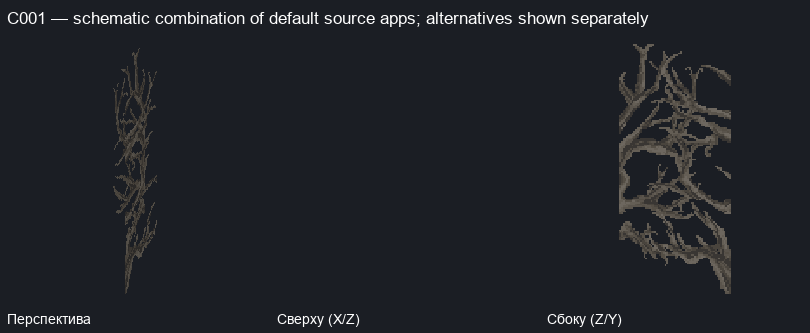

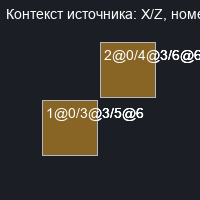
Exemplar source cells
| № | relative XYZ | source/properties | apps/transforms | choice groups |
|---|
| 1 | [0, 0, 0] | minecraft:oak_log {'axis': 'x'} | [{'model': 'minecraft:block/oak_log', 'y': 180, 'offset': [0, 0, 0]}] | 1 independent choice groups |
| 2 | [1, 0, 1] | minecraft:jungle_log {'axis': 'x'} | [{'model': 'minecraft:block/jungle_log', 'y': 180, 'offset': [1, 0, 1]}] | 1 independent choice groups |
| 3 | [0, 3, 0] | minecraft:spruce_log {'axis': 'x'} | [{'model': 'minecraft:block/spruce_log', 'y': 180, 'offset': [0, 3, 0]}] | 1 independent choice groups |
| 4 | [1, 3, 1] | minecraft:acacia_log {'axis': 'x'} | [{'model': 'minecraft:block/acacia_log', 'y': 180, 'offset': [1, 3, 1]}] | 1 independent choice groups |
| 5 | [0, 6, 0] | minecraft:birch_log {'axis': 'x'} | [{'model': 'minecraft:block/birch_log', 'y': 180, 'offset': [0, 6, 0]}] | 1 independent choice groups |
| 6 | [1, 6, 1] | minecraft:dark_oak_log {'axis': 'x'} | [{'model': 'minecraft:block/dark_oak_log', 'y': 180, 'offset': [1, 6, 1]}] | 1 independent choice groups |
All independent alternatives (not cartesian assembly)
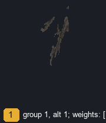
C001-A-cell1-g1-a1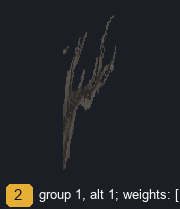
C001-A-cell2-g1-a1 C001-A-cell3-g1-a1
C001-A-cell3-g1-a1 C001-A-cell4-g1-a1
C001-A-cell4-g1-a1 C001-A-cell5-g1-a1
C001-A-cell5-g1-a1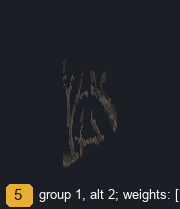
C001-A-cell5-g1-a2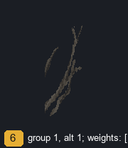
C001-A-cell6-g1-a1 C001-B-cell1-g1-a1
C001-B-cell1-g1-a1 C001-B-cell2-g1-a1
C001-B-cell2-g1-a1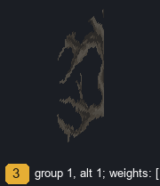
C001-B-cell3-g1-a1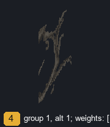
C001-B-cell4-g1-a1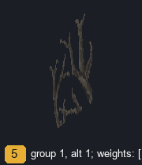
C001-B-cell5-g1-a1 C001-B-cell5-g1-a2
C001-B-cell5-g1-a2 C001-B-cell6-g1-a1
C001-B-cell6-g1-a1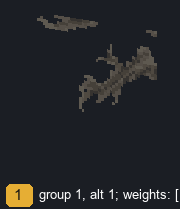
C001-C-cell1-g1-a1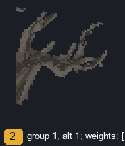
C001-C-cell2-g1-a1 C001-C-cell3-g1-a1
C001-C-cell3-g1-a1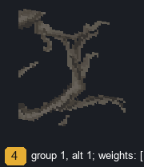
C001-C-cell4-g1-a1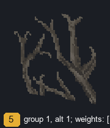
C001-C-cell5-g1-a1 C001-C-cell5-g1-a2
C001-C-cell5-g1-a2 C001-C-cell6-g1-a1
C001-C-cell6-g1-a1Full context source cells
| relative XYZ | source/properties |
|---|
Exact pattern A
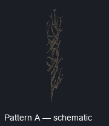
signature: 2495f22f50c91b02c3f7b15d53995238ae19118d9d77dc8a5487359e7e0f3f63; example: {'dimension': 'eh_s2:yharnam', 'anchor': [-284, 46, -68]}; count: 1; rotations: [0]; boundary flags: PROPOSED_BOUNDARY
| № | relative | source/properties | apps |
|---|
| 1 | [0, 0, 0] | minecraft:oak_log {'axis': 'x'} | [{'model': 'minecraft:block/oak_log', 'y': 180, 'offset': [0, 0, 0]}] |
| 2 | [1, 0, 1] | minecraft:jungle_log {'axis': 'x'} | [{'model': 'minecraft:block/jungle_log', 'y': 180, 'offset': [1, 0, 1]}] |
| 3 | [0, 3, 0] | minecraft:spruce_log {'axis': 'x'} | [{'model': 'minecraft:block/spruce_log', 'y': 180, 'offset': [0, 3, 0]}] |
| 4 | [1, 3, 1] | minecraft:acacia_log {'axis': 'x'} | [{'model': 'minecraft:block/acacia_log', 'y': 180, 'offset': [1, 3, 1]}] |
| 5 | [0, 6, 0] | minecraft:birch_log {'axis': 'x'} | [{'model': 'minecraft:block/birch_log', 'y': 180, 'offset': [0, 6, 0]}] |
| 6 | [1, 6, 1] | minecraft:dark_oak_log {'axis': 'x'} | [{'model': 'minecraft:block/dark_oak_log', 'y': 180, 'offset': [1, 6, 1]}] |
Exact pattern B
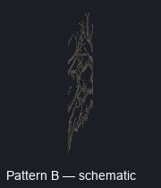
signature: 7e36560689b2c8206c616f89cfbd07e560af4ca1fcf13a7d44e3bd82cdc60c95; example: {'dimension': 'eh_s2:yharnam', 'anchor': [-169, 55, -40]}; count: 1; rotations: [0]; boundary flags: PROPOSED_BOUNDARY
| № | relative | source/properties | apps |
|---|
| 1 | [0, 0, 0] | minecraft:oak_log {'axis': 'x'} | [{'model': 'minecraft:block/oak_log', 'y': 180, 'offset': [0, 0, 0]}] |
| 2 | [0, 0, 1] | minecraft:jungle_log {'axis': 'x'} | [{'model': 'minecraft:block/jungle_log', 'y': 180, 'offset': [0, 0, 1]}] |
| 3 | [0, 3, 0] | minecraft:spruce_log {'axis': 'x'} | [{'model': 'minecraft:block/spruce_log', 'y': 180, 'offset': [0, 3, 0]}] |
| 4 | [0, 3, 1] | minecraft:acacia_log {'axis': 'x'} | [{'model': 'minecraft:block/acacia_log', 'y': 180, 'offset': [0, 3, 1]}] |
| 5 | [0, 6, 0] | minecraft:birch_log {'axis': 'x'} | [{'model': 'minecraft:block/birch_log', 'y': 180, 'offset': [0, 6, 0]}] |
| 6 | [0, 6, 1] | minecraft:dark_oak_log {'axis': 'x'} | [{'model': 'minecraft:block/dark_oak_log', 'y': 180, 'offset': [0, 6, 1]}] |
Exact pattern C
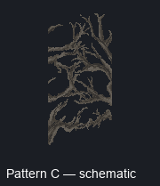
signature: 21a8cb1f11b167e661be8b77b2c36c588df37837ae93187135399a081084c8d7; example: {'dimension': 'eh_s2:yharnam', 'anchor': [-242, 89, -273]}; count: 1; rotations: [0]; boundary flags: PROPOSED_BOUNDARY
| № | relative | source/properties | apps |
|---|
| 1 | [0, 0, 0] | minecraft:oak_log {'axis': 'z'} | [{'model': 'minecraft:block/oak_log', 'y': 270, 'offset': [0, 0, 0]}] |
| 2 | [-1, 0, 1] | minecraft:jungle_log {'axis': 'z'} | [{'model': 'minecraft:block/jungle_log', 'y': 270, 'offset': [-1, 0, 1]}] |
| 3 | [0, 3, 0] | minecraft:spruce_log {'axis': 'z'} | [{'model': 'minecraft:block/spruce_log', 'y': 270, 'offset': [0, 3, 0]}] |
| 4 | [-1, 3, 1] | minecraft:acacia_log {'axis': 'z'} | [{'model': 'minecraft:block/acacia_log', 'y': 270, 'offset': [-1, 3, 1]}] |
| 5 | [0, 6, 0] | minecraft:birch_log {'axis': 'z'} | [{'model': 'minecraft:block/birch_log', 'y': 270, 'offset': [0, 6, 0]}] |
| 6 | [-1, 6, 1] | minecraft:dark_oak_log {'axis': 'z'} | [{'model': 'minecraft:block/dark_oak_log', 'y': 270, 'offset': [-1, 6, 1]}] |
C001 OBJECT: 1+2; 3=CONTEXT / SPLIT:1+2 /3+4 / CONNECTED / NOT_OBJECT / NEEDS_REVIEW
C002 · Могила / мемориал: canonical review candidate, не утверждённый объект
All 33 eh_s2:yharnam terrain regions; counts sum pattern matches, not proven distinct semantic objects; coverage: {'terrain_regions_scanned': 33, 'terrain_chunks_scanned': 21503, 'bloodborne_carrier_cells': 27119750, 'observed_carrier_states': 2605, 'exact_spatial_patterns': 3349, 'canonical_family_candidates': 2241, 'single_cell_exact_patterns': 2605, 'multi_cell_exact_patterns': 744, 'single_cell_canonical_candidates': 1570, 'multi_cell_canonical_candidates': 671, 'rejected_clusters_by_reason': {'oversized_connected_cluster': 526, 'extended_nonfinite_cluster': 75}, 'carrier_state_boundary_classes': {'finite_proposal': 2431, 'empty_visual': 83, 'full_cube_context': 86, 'unresolved_visual': 5}, 'unresolved_visual_patterns': 7, 'unresolved_visual_candidates': 7, 'rejected_cluster_count': 601, 'batch_cards': 18, 'candidates_outside_batch': 2230, 'canonical_candidates_outside_batch': 2223}; Пример: eh_s2:yharnam [-283, 43, -76]; rotations: [0]
Aliases / VARIANT_OF: —
Схема source apps для визуальной проверки.
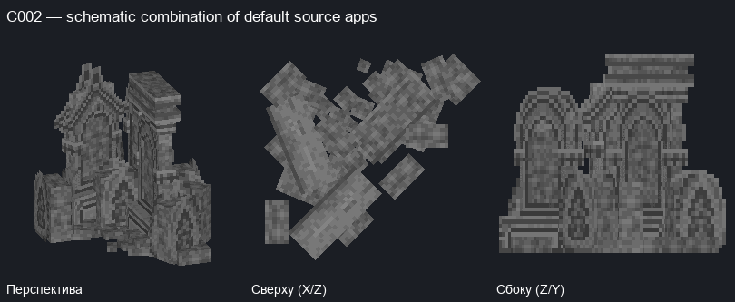
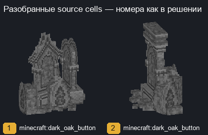

Exemplar source cells
| № | relative XYZ | source/properties | apps/transforms | choice groups |
|---|
| 1 | [0, 0, 0] | minecraft:dark_oak_button {'face': 'floor', 'facing': 'east', 'powered': 'true'} | [{'model': 'minecraft:block/addon/tombstone_gathered_4', 'y': 90, 'offset': [0, 0, 0]}] | 1 independent choice groups |
| 2 | [1, 0, 1] | minecraft:dark_oak_button {'face': 'floor', 'facing': 'south', 'powered': 'true'} | [{'model': 'minecraft:block/addon/tombstone_gathered_6', 'y': 180, 'offset': [1, 0, 1]}] | 1 independent choice groups |
All independent alternatives (not cartesian assembly)
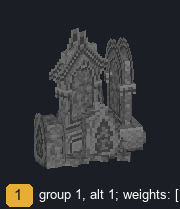
C002-A-cell1-g1-a1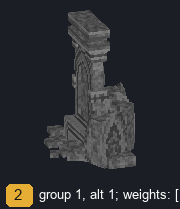
C002-A-cell2-g1-a1Full context source cells
| relative XYZ | source/properties |
|---|
| [-1, -1, -1] | minecraft:dead_fire_coral_fan {'waterlogged': 'false'} |
| [-1, -1, 0] | minecraft:dead_fire_coral_fan {'waterlogged': 'false'} |
| [-1, -1, 1] | minecraft:pink_stained_glass_pane {'east': 'false', 'north': 'false', 'south': 'true', 'waterlogged': 'false', 'west': 'true'} |
| [-1, -1, 2] | minecraft:light_gray_stained_glass_pane {'east': 'false', 'north': 'true', 'south': 'true', 'waterlogged': 'false', 'west': 'false'} |
| [-1, 0, 1] | minecraft:glass_pane {'east': 'false', 'north': 'false', 'south': 'true', 'waterlogged': 'false', 'west': 'true'} |
| [-1, 0, 2] | minecraft:glass_pane {'east': 'false', 'north': 'true', 'south': 'false', 'waterlogged': 'false', 'west': 'false'} |
| [0, -1, -1] | minecraft:barrier {} |
| [0, -1, 0] | minecraft:barrier {} |
| [0, 0, -1] | minecraft:barrier {} |
| [0, 1, -1] | minecraft:barrier {} |
| [0, 1, 0] | minecraft:barrier {} |
| [1, -1, 1] | minecraft:barrier {} |
| [1, 1, 1] | minecraft:barrier {} |
| [2, -1, 1] | minecraft:pink_stained_glass_pane {'east': 'true', 'north': 'false', 'south': 'true', 'waterlogged': 'false', 'west': 'false'} |
| [2, -1, 2] | minecraft:light_gray_stained_glass_pane {'east': 'false', 'north': 'true', 'south': 'true', 'waterlogged': 'false', 'west': 'false'} |
| [2, 0, 1] | minecraft:glass_pane {'east': 'true', 'north': 'false', 'south': 'true', 'waterlogged': 'false', 'west': 'false'} |
| [2, 0, 2] | minecraft:glass_pane {'east': 'false', 'north': 'true', 'south': 'true', 'waterlogged': 'false', 'west': 'false'} |
Exact pattern A POSSIBLY_INCOMPLETE
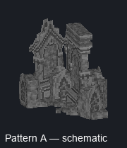
signature: b2a8e69ff8fc0cb3cbf312e85617bfa7628fed65494b5fa5aabcca618a361432; example: {'dimension': 'eh_s2:yharnam', 'anchor': [-283, 43, -76]}; count: 1; rotations: [0]; boundary flags: PROPOSED_BOUNDARY, POSSIBLY_INCOMPLETE
| № | relative | source/properties | apps |
|---|
| 1 | [0, 0, 0] | minecraft:dark_oak_button {'face': 'floor', 'facing': 'east', 'powered': 'true'} | [{'model': 'minecraft:block/addon/tombstone_gathered_4', 'y': 90, 'offset': [0, 0, 0]}] |
| 2 | [1, 0, 1] | minecraft:dark_oak_button {'face': 'floor', 'facing': 'south', 'powered': 'true'} | [{'model': 'minecraft:block/addon/tombstone_gathered_6', 'y': 180, 'offset': [1, 0, 1]}] |
C002 OBJECT: 1+2; 3=CONTEXT / SPLIT:1+2 /3+4 / CONNECTED / NOT_OBJECT / NEEDS_REVIEW
C003 · Книги: canonical review candidate, не утверждённый объект
All 33 eh_s2:yharnam terrain regions; counts sum pattern matches, not proven distinct semantic objects; coverage: {'terrain_regions_scanned': 33, 'terrain_chunks_scanned': 21503, 'bloodborne_carrier_cells': 27119750, 'observed_carrier_states': 2605, 'exact_spatial_patterns': 3349, 'canonical_family_candidates': 2241, 'single_cell_exact_patterns': 2605, 'multi_cell_exact_patterns': 744, 'single_cell_canonical_candidates': 1570, 'multi_cell_canonical_candidates': 671, 'rejected_clusters_by_reason': {'oversized_connected_cluster': 526, 'extended_nonfinite_cluster': 75}, 'carrier_state_boundary_classes': {'finite_proposal': 2431, 'empty_visual': 83, 'full_cube_context': 86, 'unresolved_visual': 5}, 'unresolved_visual_patterns': 7, 'unresolved_visual_candidates': 7, 'rejected_cluster_count': 601, 'batch_cards': 18, 'candidates_outside_batch': 2230, 'canonical_candidates_outside_batch': 2223}; Пример: eh_s2:yharnam [-432, 60, -210]; rotations: [0]
Aliases / VARIANT_OF: —
Схема default apps, не утверждение точной resolved-комбинации. Все варианты показаны отдельно; RNG не используется.
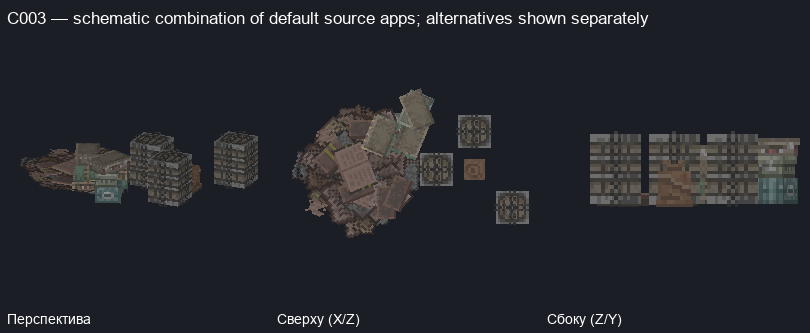

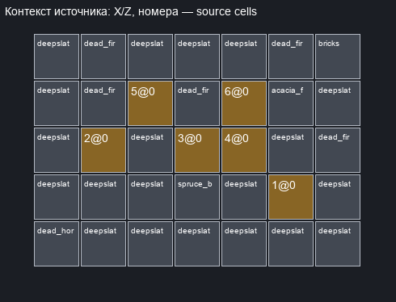
Exemplar source cells
| № | relative XYZ | source/properties | apps/transforms | choice groups |
|---|
| 1 | [0, 0, 0] | minecraft:dead_bubble_coral {'waterlogged': 'false'} | [{'model': 'minecraft:block/addon/barrel_0', 'weight': 500, 'offset': [0, 0, 0]}] | 1 independent choice groups |
| 2 | [-4, 0, 1] | minecraft:dead_horn_coral_fan {'waterlogged': 'false'} | [{'model': 'minecraft:block/addon/books_0', 'weight': 100, 'offset': [-4, 0, 1]}] | 1 independent choice groups |
| 3 | [-2, 0, 1] | minecraft:dead_bubble_coral {'waterlogged': 'false'} | [{'model': 'minecraft:block/addon/barrel_0', 'weight': 500, 'offset': [-2, 0, 1]}] | 1 independent choice groups |
| 4 | [-1, 0, 1] | minecraft:dead_bubble_coral_fan {'waterlogged': 'false'} | [{'model': 'minecraft:block/addon/bag_0', 'weight': 100, 'offset': [-1, 0, 1]}] | 1 independent choice groups |
| 5 | [-3, 0, 2] | minecraft:oxidized_cut_copper_stairs {'facing': 'south', 'half': 'bottom', 'shape': 'straight', 'waterlogged': 'false'} | [{'model': 'minecraft:block/addon/cases_0', 'y': 0, 'offset': [-3, 0, 2]}] | 1 independent choice groups |
| 6 | [-1, 0, 2] | minecraft:dead_bubble_coral {'waterlogged': 'false'} | [{'model': 'minecraft:block/addon/barrel_0', 'weight': 500, 'offset': [-1, 0, 2]}] | 1 independent choice groups |
All independent alternatives (not cartesian assembly)
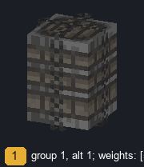
C003-A-cell1-g1-a1C003-A-cell1-g1-a2C003-A-cell1-g1-a3C003-A-cell1-g1-a4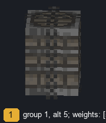
C003-A-cell1-g1-a5C003-A-cell1-g1-a6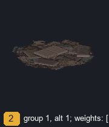
C003-A-cell2-g1-a1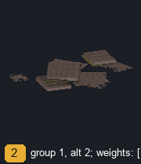
C003-A-cell2-g1-a2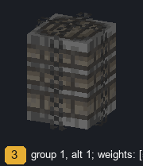
C003-A-cell3-g1-a1C003-A-cell3-g1-a2C003-A-cell3-g1-a3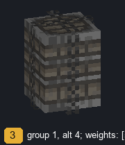
C003-A-cell3-g1-a4C003-A-cell3-g1-a5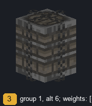
C003-A-cell3-g1-a6C003-A-cell4-g1-a1C003-A-cell4-g1-a2C003-A-cell4-g1-a3C003-A-cell4-g1-a4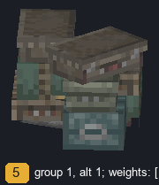
C003-A-cell5-g1-a1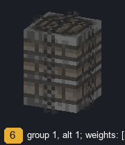
C003-A-cell6-g1-a1C003-A-cell6-g1-a2C003-A-cell6-g1-a3C003-A-cell6-g1-a4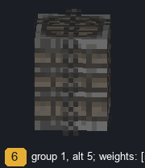
C003-A-cell6-g1-a5C003-A-cell6-g1-a6Full context source cells
| relative XYZ | source/properties |
|---|
| [-5, -1, -1] | minecraft:deepslate_gold_ore {} |
| [-5, -1, 0] | minecraft:deepslate_gold_ore {} |
| [-5, -1, 1] | minecraft:deepslate_gold_ore {} |
| [-5, -1, 2] | minecraft:deepslate_gold_ore {} |
| [-5, -1, 3] | minecraft:deepslate_gold_ore {} |
| [-5, 0, -1] | minecraft:dead_horn_coral_fan {'waterlogged': 'false'} |
| [-4, -1, -1] | minecraft:deepslate_gold_ore {} |
| [-4, -1, 0] | minecraft:deepslate_gold_ore {} |
| [-4, -1, 1] | minecraft:deepslate_gold_ore {} |
| [-4, -1, 2] | minecraft:deepslate_gold_ore {} |
| [-4, -1, 3] | minecraft:deepslate_gold_ore {} |
| [-4, 0, 2] | minecraft:dead_fire_coral_fan {'waterlogged': 'false'} |
| [-4, 0, 3] | minecraft:dead_fire_coral_fan {'waterlogged': 'false'} |
| [-3, -1, -1] | minecraft:deepslate_gold_ore {} |
| [-3, -1, 0] | minecraft:deepslate_gold_ore {} |
| [-3, -1, 1] | minecraft:deepslate_gold_ore {} |
| [-3, -1, 2] | minecraft:deepslate_gold_ore {} |
| [-3, -1, 3] | minecraft:deepslate_gold_ore {} |
| [-3, 1, 2] | minecraft:barrier {} |
| [-2, -1, -1] | minecraft:deepslate_gold_ore {} |
| [-2, -1, 0] | minecraft:deepslate_gold_ore {} |
| [-2, -1, 1] | minecraft:deepslate_gold_ore {} |
| [-2, -1, 2] | minecraft:deepslate_gold_ore {} |
| [-2, -1, 3] | minecraft:deepslate_gold_ore {} |
| [-2, 0, 0] | minecraft:spruce_button {'face': 'floor', 'facing': 'south', 'powered': 'false'} |
| [-2, 0, 2] | minecraft:dead_fire_coral_fan {'waterlogged': 'false'} |
| [-1, -1, -1] | minecraft:deepslate_gold_ore {} |
| [-1, -1, 0] | minecraft:deepslate_gold_ore {} |
| [-1, -1, 1] | minecraft:deepslate_gold_ore {} |
| [-1, -1, 2] | minecraft:deepslate_gold_ore {} |
| [-1, -1, 3] | minecraft:deepslate_gold_ore {} |
| [0, -1, -1] | minecraft:deepslate_gold_ore {} |
| [0, -1, 0] | minecraft:deepslate_gold_ore {} |
| [0, -1, 1] | minecraft:deepslate_gold_ore {} |
| [0, -1, 2] | minecraft:stone_bricks {} |
| [0, -1, 3] | minecraft:stone_bricks {} |
| [0, 0, 2] | minecraft:blackstone_wall {'east': 'none', 'north': 'none', 'south': 'none', 'up': 'true', 'waterlogged': 'false', 'west': 'none'} |
| [0, 0, 3] | minecraft:dead_fire_coral_fan {'waterlogged': 'false'} |
| [0, 1, 2] | minecraft:acacia_fence {'east': 'false', 'north': 'false', 'south': 'false', 'waterlogged': 'false', 'west': 'false'} |
| [1, -1, -1] | minecraft:deepslate_gold_ore {} |
| [1, -1, 0] | minecraft:deepslate_gold_ore {} |
| [1, -1, 1] | minecraft:deepslate_gold_ore {} |
| [1, -1, 2] | minecraft:deepslate_gold_ore {} |
| [1, -1, 3] | minecraft:stone_bricks {} |
| [1, 0, 1] | minecraft:dead_fire_coral_fan {'waterlogged': 'false'} |
| [1, 0, 3] | minecraft:bricks {} |
| [1, 1, 3] | minecraft:bricks {} |
Exact pattern A POSSIBLY_INCOMPLETE
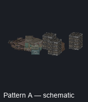
signature: 810e65e60c5738840533b109b515e706ad997d0a41e624ff5f5c037dccf4b683; example: {'dimension': 'eh_s2:yharnam', 'anchor': [-432, 60, -210]}; count: 1; rotations: [0]; boundary flags: PROPOSED_BOUNDARY, POSSIBLY_INCOMPLETE
| № | relative | source/properties | apps |
|---|
| 1 | [0, 0, 0] | minecraft:dead_bubble_coral {'waterlogged': 'false'} | [{'model': 'minecraft:block/addon/barrel_0', 'weight': 500, 'offset': [0, 0, 0]}] |
| 2 | [-4, 0, 1] | minecraft:dead_horn_coral_fan {'waterlogged': 'false'} | [{'model': 'minecraft:block/addon/books_0', 'weight': 100, 'offset': [-4, 0, 1]}] |
| 3 | [-2, 0, 1] | minecraft:dead_bubble_coral {'waterlogged': 'false'} | [{'model': 'minecraft:block/addon/barrel_0', 'weight': 500, 'offset': [-2, 0, 1]}] |
| 4 | [-1, 0, 1] | minecraft:dead_bubble_coral_fan {'waterlogged': 'false'} | [{'model': 'minecraft:block/addon/bag_0', 'weight': 100, 'offset': [-1, 0, 1]}] |
| 5 | [-3, 0, 2] | minecraft:oxidized_cut_copper_stairs {'facing': 'south', 'half': 'bottom', 'shape': 'straight', 'waterlogged': 'false'} | [{'model': 'minecraft:block/addon/cases_0', 'y': 0, 'offset': [-3, 0, 2]}] |
| 6 | [-1, 0, 2] | minecraft:dead_bubble_coral {'waterlogged': 'false'} | [{'model': 'minecraft:block/addon/barrel_0', 'weight': 500, 'offset': [-1, 0, 2]}] |
C003 OBJECT: 1+2; 3=CONTEXT / SPLIT:1+2 /3+4 / CONNECTED / NOT_OBJECT / NEEDS_REVIEW
C008 · Статуя: canonical review candidate, не утверждённый объект
All 33 eh_s2:yharnam terrain regions; counts sum pattern matches, not proven distinct semantic objects; coverage: {'terrain_regions_scanned': 33, 'terrain_chunks_scanned': 21503, 'bloodborne_carrier_cells': 27119750, 'observed_carrier_states': 2605, 'exact_spatial_patterns': 3349, 'canonical_family_candidates': 2241, 'single_cell_exact_patterns': 2605, 'multi_cell_exact_patterns': 744, 'single_cell_canonical_candidates': 1570, 'multi_cell_canonical_candidates': 671, 'rejected_clusters_by_reason': {'oversized_connected_cluster': 526, 'extended_nonfinite_cluster': 75}, 'carrier_state_boundary_classes': {'finite_proposal': 2431, 'empty_visual': 83, 'full_cube_context': 86, 'unresolved_visual': 5}, 'unresolved_visual_patterns': 7, 'unresolved_visual_candidates': 7, 'rejected_cluster_count': 601, 'batch_cards': 18, 'candidates_outside_batch': 2230, 'canonical_candidates_outside_batch': 2223}; Пример: eh_s2:yharnam [-421, 84, -91]; rotations: [0]
Aliases / VARIANT_OF: —
Схема source apps для визуальной проверки.
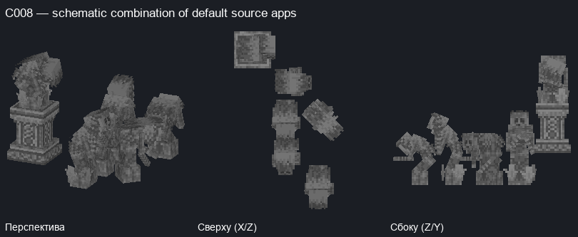

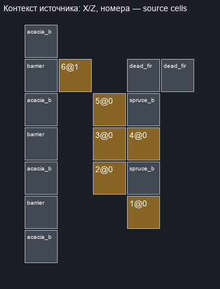
Exemplar source cells
| № | relative XYZ | source/properties | apps/transforms | choice groups |
|---|
| 1 | [0, 0, 0] | minecraft:waxed_cut_copper_stairs {'facing': 'south', 'half': 'top', 'shape': 'straight', 'waterlogged': 'false'} | [{'model': 'minecraft:block/hold/statue_4', 'y': 90, 'offset': [0, 0, 0]}] | 1 independent choice groups |
| 2 | [-1, 0, 1] | minecraft:waxed_cut_copper_stairs {'facing': 'south', 'half': 'bottom', 'shape': 'straight', 'waterlogged': 'false'} | [{'model': 'minecraft:block/hold/statue_3', 'y': 90, 'offset': [-1, 0, 1]}] | 1 independent choice groups |
| 3 | [-1, 0, 2] | minecraft:waxed_cut_copper_stairs {'facing': 'south', 'half': 'top', 'shape': 'straight', 'waterlogged': 'false'} | [{'model': 'minecraft:block/hold/statue_4', 'y': 90, 'offset': [-1, 0, 2]}] | 1 independent choice groups |
| 4 | [0, 0, 2] | minecraft:waxed_cut_copper_stairs {'facing': 'west', 'half': 'top', 'shape': 'outer_left', 'waterlogged': 'false'} | [{'model': 'minecraft:block/hold/statue_5', 'y': 90, 'offset': [0, 0, 2]}] | 1 independent choice groups |
| 5 | [-1, 0, 3] | minecraft:waxed_cut_copper_stairs {'facing': 'west', 'half': 'bottom', 'shape': 'straight', 'waterlogged': 'false'} | [{'model': 'minecraft:block/hold/statue_3', 'y': 180, 'offset': [-1, 0, 3]}] | 1 independent choice groups |
| 6 | [-2, 1, 4] | minecraft:weathered_cut_copper_stairs {'facing': 'west', 'half': 'bottom', 'shape': 'straight', 'waterlogged': 'false'} | [{'model': 'minecraft:block/hold/statue', 'y': 180, 'offset': [-2, 1, 4]}] | 1 independent choice groups |
All independent alternatives (not cartesian assembly)
C008-A-cell1-g1-a1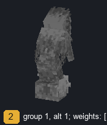
C008-A-cell2-g1-a1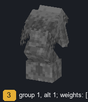
C008-A-cell3-g1-a1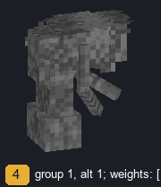
C008-A-cell4-g1-a1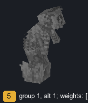
C008-A-cell5-g1-a1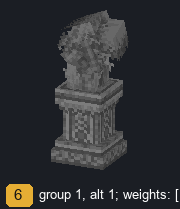
C008-A-cell6-g1-a1Full context source cells
| relative XYZ | source/properties |
|---|
| [-3, -1, -1] | minecraft:barrier {} |
| [-3, -1, 0] | minecraft:barrier {} |
| [-3, -1, 1] | minecraft:barrier {} |
| [-3, -1, 2] | minecraft:barrier {} |
| [-3, -1, 3] | minecraft:barrier {} |
| [-3, -1, 4] | minecraft:barrier {} |
| [-3, -1, 5] | minecraft:barrier {} |
| [-3, 0, -1] | minecraft:cut_copper_stairs {'facing': 'west', 'half': 'top', 'shape': 'straight', 'waterlogged': 'false'} |
| [-3, 0, 0] | minecraft:cut_copper_stairs {'facing': 'west', 'half': 'top', 'shape': 'straight', 'waterlogged': 'false'} |
| [-3, 0, 1] | minecraft:cut_copper_stairs {'facing': 'west', 'half': 'top', 'shape': 'straight', 'waterlogged': 'false'} |
| [-3, 0, 2] | minecraft:cut_copper_stairs {'facing': 'west', 'half': 'top', 'shape': 'straight', 'waterlogged': 'false'} |
| [-3, 0, 3] | minecraft:cut_copper_stairs {'facing': 'west', 'half': 'top', 'shape': 'straight', 'waterlogged': 'false'} |
| [-3, 0, 4] | minecraft:cut_copper_stairs {'facing': 'west', 'half': 'top', 'shape': 'straight', 'waterlogged': 'false'} |
| [-3, 0, 5] | minecraft:cut_copper_stairs {'facing': 'west', 'half': 'top', 'shape': 'straight', 'waterlogged': 'false'} |
| [-3, 1, -1] | minecraft:barrier {} |
| [-3, 1, 0] | minecraft:barrier {} |
| [-3, 1, 1] | minecraft:barrier {} |
| [-3, 1, 2] | minecraft:barrier {} |
| [-3, 1, 3] | minecraft:barrier {} |
| [-3, 1, 4] | minecraft:barrier {} |
| [-3, 1, 5] | minecraft:barrier {} |
| [-3, 2, -1] | minecraft:acacia_button {'face': 'floor', 'facing': 'west', 'powered': 'false'} |
| [-3, 2, 1] | minecraft:acacia_button {'face': 'floor', 'facing': 'west', 'powered': 'false'} |
| [-3, 2, 3] | minecraft:acacia_button {'face': 'floor', 'facing': 'west', 'powered': 'false'} |
| [-3, 2, 5] | minecraft:acacia_button {'face': 'floor', 'facing': 'west', 'powered': 'false'} |
| [-2, -1, 4] | minecraft:chiseled_deepslate {} |
| [0, -1, 1] | minecraft:spruce_button {'face': 'floor', 'facing': 'west', 'powered': 'false'} |
| [0, -1, 3] | minecraft:spruce_button {'face': 'floor', 'facing': 'west', 'powered': 'false'} |
| [0, -1, 4] | minecraft:dead_fire_coral_fan {'waterlogged': 'false'} |
| [1, -1, 4] | minecraft:dead_fire_coral_fan {'waterlogged': 'false'} |
Exact pattern A POSSIBLY_INCOMPLETE
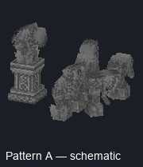
signature: 0bbca57ca082094533a0629c41e48174237394950a45f2861d4de912e93c6eb8; example: {'dimension': 'eh_s2:yharnam', 'anchor': [-421, 84, -91]}; count: 1; rotations: [0]; boundary flags: PROPOSED_BOUNDARY, POSSIBLY_INCOMPLETE
| № | relative | source/properties | apps |
|---|
| 1 | [0, 0, 0] | minecraft:waxed_cut_copper_stairs {'facing': 'south', 'half': 'top', 'shape': 'straight', 'waterlogged': 'false'} | [{'model': 'minecraft:block/hold/statue_4', 'y': 90, 'offset': [0, 0, 0]}] |
| 2 | [-1, 0, 1] | minecraft:waxed_cut_copper_stairs {'facing': 'south', 'half': 'bottom', 'shape': 'straight', 'waterlogged': 'false'} | [{'model': 'minecraft:block/hold/statue_3', 'y': 90, 'offset': [-1, 0, 1]}] |
| 3 | [-1, 0, 2] | minecraft:waxed_cut_copper_stairs {'facing': 'south', 'half': 'top', 'shape': 'straight', 'waterlogged': 'false'} | [{'model': 'minecraft:block/hold/statue_4', 'y': 90, 'offset': [-1, 0, 2]}] |
| 4 | [0, 0, 2] | minecraft:waxed_cut_copper_stairs {'facing': 'west', 'half': 'top', 'shape': 'outer_left', 'waterlogged': 'false'} | [{'model': 'minecraft:block/hold/statue_5', 'y': 90, 'offset': [0, 0, 2]}] |
| 5 | [-1, 0, 3] | minecraft:waxed_cut_copper_stairs {'facing': 'west', 'half': 'bottom', 'shape': 'straight', 'waterlogged': 'false'} | [{'model': 'minecraft:block/hold/statue_3', 'y': 180, 'offset': [-1, 0, 3]}] |
| 6 | [-2, 1, 4] | minecraft:weathered_cut_copper_stairs {'facing': 'west', 'half': 'bottom', 'shape': 'straight', 'waterlogged': 'false'} | [{'model': 'minecraft:block/hold/statue', 'y': 180, 'offset': [-2, 1, 4]}] |
C008 OBJECT: 1+2; 3=CONTEXT / SPLIT:1+2 /3+4 / CONNECTED / NOT_OBJECT / NEEDS_REVIEW
C009 · Дерево: canonical review candidate, не утверждённый объект
All 33 eh_s2:yharnam terrain regions; counts sum pattern matches, not proven distinct semantic objects; coverage: {'terrain_regions_scanned': 33, 'terrain_chunks_scanned': 21503, 'bloodborne_carrier_cells': 27119750, 'observed_carrier_states': 2605, 'exact_spatial_patterns': 3349, 'canonical_family_candidates': 2241, 'single_cell_exact_patterns': 2605, 'multi_cell_exact_patterns': 744, 'single_cell_canonical_candidates': 1570, 'multi_cell_canonical_candidates': 671, 'rejected_clusters_by_reason': {'oversized_connected_cluster': 526, 'extended_nonfinite_cluster': 75}, 'carrier_state_boundary_classes': {'finite_proposal': 2431, 'empty_visual': 83, 'full_cube_context': 86, 'unresolved_visual': 5}, 'unresolved_visual_patterns': 7, 'unresolved_visual_candidates': 7, 'rejected_cluster_count': 601, 'batch_cards': 18, 'candidates_outside_batch': 2230, 'canonical_candidates_outside_batch': 2223}; Пример: eh_s2:yharnam [-323, -19, -81]; rotations: [0]
Aliases / VARIANT_OF: —
Схема default apps, не утверждение точной resolved-комбинации. Все варианты показаны отдельно; RNG не используется.
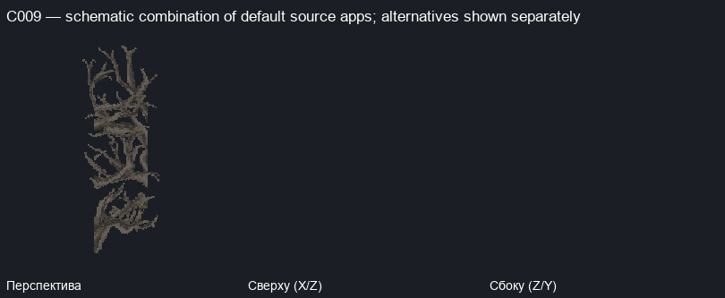
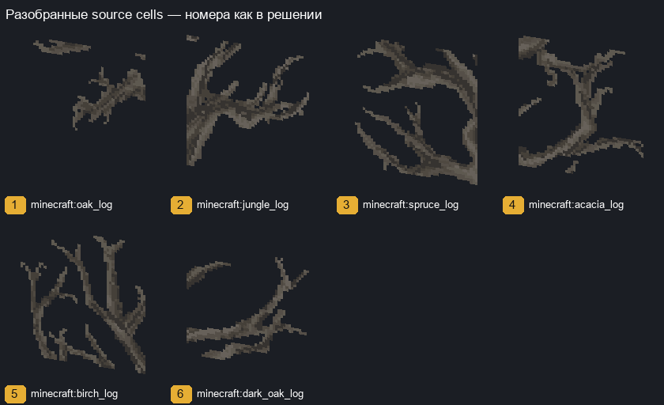

Exemplar source cells
| № | relative XYZ | source/properties | apps/transforms | choice groups |
|---|
| 1 | [0, 0, 0] | minecraft:oak_log {'axis': 'z'} | [{'model': 'minecraft:block/oak_log', 'y': 270, 'offset': [0, 0, 0]}] | 1 independent choice groups |
| 2 | [1, 0, 1] | minecraft:jungle_log {'axis': 'z'} | [{'model': 'minecraft:block/jungle_log', 'y': 270, 'offset': [1, 0, 1]}] | 1 independent choice groups |
| 3 | [0, 3, 0] | minecraft:spruce_log {'axis': 'z'} | [{'model': 'minecraft:block/spruce_log', 'y': 270, 'offset': [0, 3, 0]}] | 1 independent choice groups |
| 4 | [1, 3, 1] | minecraft:acacia_log {'axis': 'z'} | [{'model': 'minecraft:block/acacia_log', 'y': 270, 'offset': [1, 3, 1]}] | 1 independent choice groups |
| 5 | [0, 6, 0] | minecraft:birch_log {'axis': 'z'} | [{'model': 'minecraft:block/birch_log', 'y': 270, 'offset': [0, 6, 0]}] | 1 independent choice groups |
| 6 | [1, 6, 1] | minecraft:dark_oak_log {'axis': 'z'} | [{'model': 'minecraft:block/dark_oak_log', 'y': 270, 'offset': [1, 6, 1]}] | 1 independent choice groups |
All independent alternatives (not cartesian assembly)
 C009-A-cell1-g1-a1
C009-A-cell1-g1-a1 C009-A-cell2-g1-a1
C009-A-cell2-g1-a1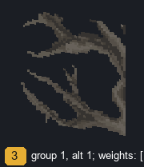
C009-A-cell3-g1-a1 C009-A-cell4-g1-a1
C009-A-cell4-g1-a1 C009-A-cell5-g1-a1
C009-A-cell5-g1-a1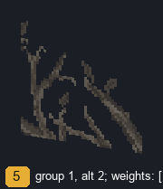
C009-A-cell5-g1-a2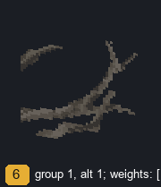
C009-A-cell6-g1-a1Full context source cells
| relative XYZ | source/properties |
|---|
Exact pattern A
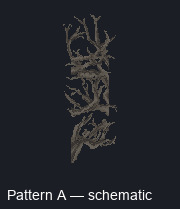
signature: ea134af669abfb38c5376399d5de08000cb80ae8e5a29c21a2a1764ed5c3770c; example: {'dimension': 'eh_s2:yharnam', 'anchor': [-323, -19, -81]}; count: 1; rotations: [0]; boundary flags: PROPOSED_BOUNDARY
| № | relative | source/properties | apps |
|---|
| 1 | [0, 0, 0] | minecraft:oak_log {'axis': 'z'} | [{'model': 'minecraft:block/oak_log', 'y': 270, 'offset': [0, 0, 0]}] |
| 2 | [1, 0, 1] | minecraft:jungle_log {'axis': 'z'} | [{'model': 'minecraft:block/jungle_log', 'y': 270, 'offset': [1, 0, 1]}] |
| 3 | [0, 3, 0] | minecraft:spruce_log {'axis': 'z'} | [{'model': 'minecraft:block/spruce_log', 'y': 270, 'offset': [0, 3, 0]}] |
| 4 | [1, 3, 1] | minecraft:acacia_log {'axis': 'z'} | [{'model': 'minecraft:block/acacia_log', 'y': 270, 'offset': [1, 3, 1]}] |
| 5 | [0, 6, 0] | minecraft:birch_log {'axis': 'z'} | [{'model': 'minecraft:block/birch_log', 'y': 270, 'offset': [0, 6, 0]}] |
| 6 | [1, 6, 1] | minecraft:dark_oak_log {'axis': 'z'} | [{'model': 'minecraft:block/dark_oak_log', 'y': 270, 'offset': [1, 6, 1]}] |
C009 OBJECT: 1+2; 3=CONTEXT / SPLIT:1+2 /3+4 / CONNECTED / NOT_OBJECT / NEEDS_REVIEW
C028 · Ящики / ёмкости: canonical review candidate, не утверждённый объект
All 33 eh_s2:yharnam terrain regions; counts sum pattern matches, not proven distinct semantic objects; coverage: {'terrain_regions_scanned': 33, 'terrain_chunks_scanned': 21503, 'bloodborne_carrier_cells': 27119750, 'observed_carrier_states': 2605, 'exact_spatial_patterns': 3349, 'canonical_family_candidates': 2241, 'single_cell_exact_patterns': 2605, 'multi_cell_exact_patterns': 744, 'single_cell_canonical_candidates': 1570, 'multi_cell_canonical_candidates': 671, 'rejected_clusters_by_reason': {'oversized_connected_cluster': 526, 'extended_nonfinite_cluster': 75}, 'carrier_state_boundary_classes': {'finite_proposal': 2431, 'empty_visual': 83, 'full_cube_context': 86, 'unresolved_visual': 5}, 'unresolved_visual_patterns': 7, 'unresolved_visual_candidates': 7, 'rejected_cluster_count': 601, 'batch_cards': 18, 'candidates_outside_batch': 2230, 'canonical_candidates_outside_batch': 2223}; Пример: eh_s2:yharnam [-492, 41, -322]; rotations: [0, 90, 180, 270]
Aliases / VARIANT_OF: —
Схема default apps, не утверждение точной resolved-комбинации. Все варианты показаны отдельно; RNG не используется.
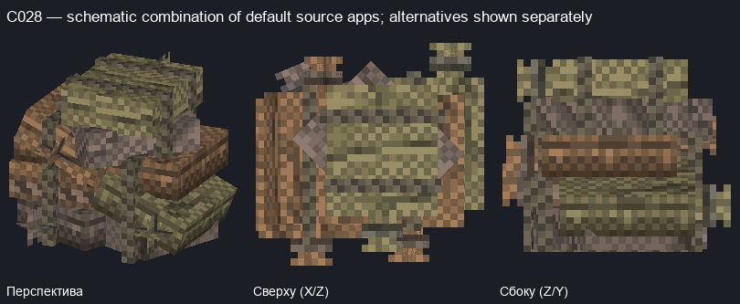
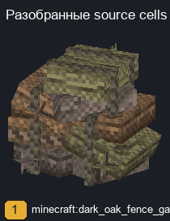
Exemplar source cells
| № | relative XYZ | source/properties | apps/transforms | choice groups |
|---|
| 1 | [0, 0, 0] | minecraft:dark_oak_fence_gate {'facing': 'west', 'in_wall': 'false', 'open': 'false', 'powered': 'false'} | [{'model': 'minecraft:block/addon/dark_oak_fence_gate_open', 'y': 270, 'weight': 100, 'offset': [0, 0, 0]}] | 1 independent choice groups |
All independent alternatives (not cartesian assembly)
C028-A-cell1-g1-a1C028-B-cell1-g1-a1C028-C-cell1-g1-a1C028-D-cell1-g1-a1Full context source cells
| relative XYZ | source/properties |
|---|
| [-1, -1, -1] | minecraft:stone_bricks {} |
| [-1, -1, 0] | minecraft:stone_bricks {} |
| [-1, -1, 1] | minecraft:stone_bricks {} |
| [-1, 0, -1] | minecraft:stone_bricks {} |
| [-1, 0, 0] | minecraft:stone_bricks {} |
| [-1, 0, 1] | minecraft:stone_bricks {} |
| [-1, 1, -1] | minecraft:stone_bricks {} |
| [-1, 1, 0] | minecraft:stone_bricks {} |
| [-1, 1, 1] | minecraft:stone_bricks {} |
| [0, -1, -1] | minecraft:purpur_slab {'type': 'top', 'waterlogged': 'false'} |
| [0, -1, 0] | minecraft:purpur_slab {'type': 'top', 'waterlogged': 'false'} |
| [0, -1, 1] | minecraft:purpur_slab {'type': 'top', 'waterlogged': 'false'} |
| [0, 0, -1] | minecraft:dead_fire_coral_fan {'waterlogged': 'false'} |
| [1, -1, -1] | minecraft:deepslate_gold_ore {} |
| [1, -1, 0] | minecraft:deepslate_gold_ore {} |
| [1, -1, 1] | minecraft:deepslate_gold_ore {} |
| [1, 0, -1] | minecraft:dead_fire_coral_fan {'waterlogged': 'false'} |
| [1, 0, 0] | minecraft:dead_fire_coral_fan {'waterlogged': 'false'} |
| [1, 0, 1] | minecraft:dark_oak_fence_gate {'facing': 'west', 'in_wall': 'false', 'open': 'false', 'powered': 'false'} |
Exact pattern A POSSIBLY_INCOMPLETE
signature: 014daae692610c76f031bdc8aa06bd946aa251b6dfcb7b762f322f3ed5fae003; example: {'dimension': 'eh_s2:yharnam', 'anchor': [-492, 41, -322]}; count: 54; rotations: [0]; boundary flags: PROPOSED_BOUNDARY, POSSIBLY_INCOMPLETE
| № | relative | source/properties | apps |
|---|
| 1 | [0, 0, 0] | minecraft:dark_oak_fence_gate {'facing': 'west', 'in_wall': 'false', 'open': 'false', 'powered': 'false'} | [{'model': 'minecraft:block/addon/dark_oak_fence_gate_open', 'y': 270, 'weight': 100, 'offset': [0, 0, 0]}] |
Exact pattern B POSSIBLY_INCOMPLETE
signature: 0f2c805dbe995ea087998d7658a07d1dd84fff03c24c9ae11c262657f5d2a5f2; example: {'dimension': 'eh_s2:yharnam', 'anchor': [-442, 65, -310]}; count: 51; rotations: [0]; boundary flags: PROPOSED_BOUNDARY, POSSIBLY_INCOMPLETE
| № | relative | source/properties | apps |
|---|
| 1 | [0, 0, 0] | minecraft:dark_oak_fence_gate {'facing': 'east', 'in_wall': 'false', 'open': 'false', 'powered': 'false'} | [{'model': 'minecraft:block/addon/dark_oak_fence_gate_open', 'y': 0, 'weight': 100, 'offset': [0, 0, 0]}] |
Exact pattern C POSSIBLY_INCOMPLETE
signature: 8d1096e099572a0cd45322bb2eb6b0d4556d56a815a8c731c0155662d6376e7b; example: {'dimension': 'eh_s2:yharnam', 'anchor': [-490, 41, -323]}; count: 44; rotations: [0]; boundary flags: PROPOSED_BOUNDARY, POSSIBLY_INCOMPLETE
| № | relative | source/properties | apps |
|---|
| 1 | [0, 0, 0] | minecraft:dark_oak_fence_gate {'facing': 'south', 'in_wall': 'false', 'open': 'false', 'powered': 'false'} | [{'model': 'minecraft:block/addon/dark_oak_fence_gate_open', 'y': 180, 'offset': [0, 0, 0]}] |
Exact pattern D POSSIBLY_INCOMPLETE
signature: c65dca14ddbccdc30aa9b1ded77ef67d68289ecf73cf37aca916ed4e70fd50a5; example: {'dimension': 'eh_s2:yharnam', 'anchor': [-374, 41, -314]}; count: 56; rotations: [0]; boundary flags: PROPOSED_BOUNDARY, POSSIBLY_INCOMPLETE
| № | relative | source/properties | apps |
|---|
| 1 | [0, 0, 0] | minecraft:dark_oak_fence_gate {'facing': 'north', 'in_wall': 'false', 'open': 'false', 'powered': 'false'} | [{'model': 'minecraft:block/addon/dark_oak_fence_gate_open', 'y': 90, 'weight': 100, 'offset': [0, 0, 0]}] |
C028 OBJECT: 1+2; 3=CONTEXT / SPLIT:1+2 /3+4 / CONNECTED / NOT_OBJECT / NEEDS_REVIEW
C046 · Багаж: canonical review candidate, не утверждённый объект
All 33 eh_s2:yharnam terrain regions; counts sum pattern matches, not proven distinct semantic objects; coverage: {'terrain_regions_scanned': 33, 'terrain_chunks_scanned': 21503, 'bloodborne_carrier_cells': 27119750, 'observed_carrier_states': 2605, 'exact_spatial_patterns': 3349, 'canonical_family_candidates': 2241, 'single_cell_exact_patterns': 2605, 'multi_cell_exact_patterns': 744, 'single_cell_canonical_candidates': 1570, 'multi_cell_canonical_candidates': 671, 'rejected_clusters_by_reason': {'oversized_connected_cluster': 526, 'extended_nonfinite_cluster': 75}, 'carrier_state_boundary_classes': {'finite_proposal': 2431, 'empty_visual': 83, 'full_cube_context': 86, 'unresolved_visual': 5}, 'unresolved_visual_patterns': 7, 'unresolved_visual_candidates': 7, 'rejected_cluster_count': 601, 'batch_cards': 18, 'candidates_outside_batch': 2230, 'canonical_candidates_outside_batch': 2223}; Пример: eh_s2:yharnam [-403, 60, -261]; rotations: [0]
Aliases / VARIANT_OF: —
Схема default apps, не утверждение точной resolved-комбинации. Все варианты показаны отдельно; RNG не используется.
Exemplar source cells
| № | relative XYZ | source/properties | apps/transforms | choice groups |
|---|
| 1 | [0, 0, 0] | minecraft:oxidized_cut_copper_stairs {'facing': 'west', 'half': 'bottom', 'shape': 'straight', 'waterlogged': 'false'} | [{'model': 'minecraft:block/addon/cases_0', 'y': 90, 'offset': [0, 0, 0]}] | 1 independent choice groups |
| 2 | [1, 0, 0] | minecraft:dead_fire_coral_fan {'waterlogged': 'false'} | [{'model': 'minecraft:block/addon/grass_0', 'weight': 100, 'offset': [1, 0, 0]}] | 1 independent choice groups |
| 3 | [2, 0, 0] | minecraft:dead_fire_coral_fan {'waterlogged': 'false'} | [{'model': 'minecraft:block/addon/grass_0', 'weight': 100, 'offset': [2, 0, 0]}] | 1 independent choice groups |
| 4 | [1, 0, 1] | minecraft:dead_fire_coral_fan {'waterlogged': 'false'} | [{'model': 'minecraft:block/addon/grass_0', 'weight': 100, 'offset': [1, 0, 1]}] | 1 independent choice groups |
All independent alternatives (not cartesian assembly)
C046-A-cell1-g1-a1C046-A-cell2-g1-a1C046-A-cell2-g1-a2C046-A-cell2-g1-a3C046-A-cell2-g1-a4C046-A-cell2-g1-a5C046-A-cell2-g1-a6C046-A-cell2-g1-a7C046-A-cell2-g1-a8C046-A-cell3-g1-a1C046-A-cell3-g1-a2C046-A-cell3-g1-a3C046-A-cell3-g1-a4C046-A-cell3-g1-a5C046-A-cell3-g1-a6C046-A-cell3-g1-a7C046-A-cell3-g1-a8C046-A-cell4-g1-a1C046-A-cell4-g1-a2C046-A-cell4-g1-a3C046-A-cell4-g1-a4C046-A-cell4-g1-a5C046-A-cell4-g1-a6C046-A-cell4-g1-a7C046-A-cell4-g1-a8Full context source cells
| relative XYZ | source/properties |
|---|
| [-1, -1, -1] | minecraft:stone_bricks {} |
| [-1, -1, 0] | minecraft:deepslate_gold_ore {} |
| [-1, -1, 1] | minecraft:deepslate_gold_ore {} |
| [-1, -1, 2] | minecraft:deepslate_gold_ore {} |
| [-1, 0, -1] | minecraft:bricks {} |
| [-1, 1, -1] | minecraft:bricks {} |
| [0, -1, -1] | minecraft:stone_bricks {} |
| [0, -1, 0] | minecraft:deepslate_gold_ore {} |
| [0, -1, 1] | minecraft:deepslate_gold_ore {} |
| [0, -1, 2] | minecraft:deepslate_gold_ore {} |
| [0, 0, -1] | minecraft:bricks {} |
| [0, 1, -1] | minecraft:bricks {} |
| [0, 1, 0] | minecraft:barrier {} |
| [0, 1, 1] | minecraft:light {'level': '5', 'waterlogged': 'false'} |
| [1, -1, -1] | minecraft:deepslate_gold_ore {} |
| [1, -1, 0] | minecraft:deepslate_gold_ore {} |
| [1, -1, 1] | minecraft:deepslate_gold_ore {} |
| [1, -1, 2] | minecraft:deepslate_gold_ore {} |
| [2, -1, -1] | minecraft:deepslate_gold_ore {} |
| [2, -1, 0] | minecraft:deepslate_gold_ore {} |
| [2, -1, 1] | minecraft:deepslate_gold_ore {} |
| [2, -1, 2] | minecraft:deepslate_gold_ore {} |
| [3, -1, -1] | minecraft:deepslate_gold_ore {} |
| [3, -1, 0] | minecraft:deepslate_gold_ore {} |
| [3, -1, 1] | minecraft:deepslate_gold_ore {} |
| [3, -1, 2] | minecraft:deepslate_gold_ore {} |
| [3, 0, 2] | minecraft:dead_fire_coral_fan {'waterlogged': 'false'} |
Exact pattern A POSSIBLY_INCOMPLETE
signature: 0250e0b3bb4a7cf1c953123e2c7c166cc9fd052da0a48e78c3c8c2c5abccc121; example: {'dimension': 'eh_s2:yharnam', 'anchor': [-403, 60, -261]}; count: 1; rotations: [0]; boundary flags: PROPOSED_BOUNDARY, POSSIBLY_INCOMPLETE
| № | relative | source/properties | apps |
|---|
| 1 | [0, 0, 0] | minecraft:oxidized_cut_copper_stairs {'facing': 'west', 'half': 'bottom', 'shape': 'straight', 'waterlogged': 'false'} | [{'model': 'minecraft:block/addon/cases_0', 'y': 90, 'offset': [0, 0, 0]}] |
| 2 | [1, 0, 0] | minecraft:dead_fire_coral_fan {'waterlogged': 'false'} | [{'model': 'minecraft:block/addon/grass_0', 'weight': 100, 'offset': [1, 0, 0]}] |
| 3 | [2, 0, 0] | minecraft:dead_fire_coral_fan {'waterlogged': 'false'} | [{'model': 'minecraft:block/addon/grass_0', 'weight': 100, 'offset': [2, 0, 0]}] |
| 4 | [1, 0, 1] | minecraft:dead_fire_coral_fan {'waterlogged': 'false'} | [{'model': 'minecraft:block/addon/grass_0', 'weight': 100, 'offset': [1, 0, 1]}] |
C046 OBJECT: 1+2; 3=CONTEXT / SPLIT:1+2 /3+4 / CONNECTED / NOT_OBJECT / NEEDS_REVIEW
C282 · Дверь / ворота: canonical review candidate, не утверждённый объект
All 33 eh_s2:yharnam terrain regions; counts sum pattern matches, not proven distinct semantic objects; coverage: {'terrain_regions_scanned': 33, 'terrain_chunks_scanned': 21503, 'bloodborne_carrier_cells': 27119750, 'observed_carrier_states': 2605, 'exact_spatial_patterns': 3349, 'canonical_family_candidates': 2241, 'single_cell_exact_patterns': 2605, 'multi_cell_exact_patterns': 744, 'single_cell_canonical_candidates': 1570, 'multi_cell_canonical_candidates': 671, 'rejected_clusters_by_reason': {'oversized_connected_cluster': 526, 'extended_nonfinite_cluster': 75}, 'carrier_state_boundary_classes': {'finite_proposal': 2431, 'empty_visual': 83, 'full_cube_context': 86, 'unresolved_visual': 5}, 'unresolved_visual_patterns': 7, 'unresolved_visual_candidates': 7, 'rejected_cluster_count': 601, 'batch_cards': 18, 'candidates_outside_batch': 2230, 'canonical_candidates_outside_batch': 2223}; Пример: eh_s2:yharnam [-493, 57, -330]; rotations: [0, 90, 180, 270]
Aliases / VARIANT_OF: —
Схема source apps для визуальной проверки.
Exemplar source cells
| № | relative XYZ | source/properties | apps/transforms | choice groups |
|---|
| 1 | [0, 0, 0] | minecraft:dark_oak_stairs {'facing': 'east', 'half': 'bottom', 'shape': 'straight', 'waterlogged': 'false'} | [{'model': 'minecraft:block/dark_door_1', 'y': 270, 'offset': [0, 0, 0]}] | 1 independent choice groups |
All independent alternatives (not cartesian assembly)
C282-A-cell1-g1-a1C282-B-cell1-g1-a1C282-C-cell1-g1-a1C282-D-cell1-g1-a1Full context source cells
| relative XYZ | source/properties |
|---|
| [0, -1, -1] | minecraft:glass_pane {'east': 'false', 'north': 'true', 'south': 'false', 'waterlogged': 'false', 'west': 'false'} |
| [0, -1, 1] | minecraft:glass_pane {'east': 'false', 'north': 'false', 'south': 'true', 'waterlogged': 'false', 'west': 'false'} |
| [0, 0, -1] | minecraft:glass_pane {'east': 'false', 'north': 'true', 'south': 'false', 'waterlogged': 'false', 'west': 'false'} |
| [0, 0, 1] | minecraft:glass_pane {'east': 'false', 'north': 'false', 'south': 'true', 'waterlogged': 'false', 'west': 'false'} |
Exact pattern A POSSIBLY_INCOMPLETE
signature: 1693c7205135847919a1d515e970dc40905faad299fc826d42cbb4cbdd057b5d; example: {'dimension': 'eh_s2:yharnam', 'anchor': [-493, 57, -330]}; count: 16; rotations: [0]; boundary flags: PROPOSED_BOUNDARY, POSSIBLY_INCOMPLETE
| № | relative | source/properties | apps |
|---|
| 1 | [0, 0, 0] | minecraft:dark_oak_stairs {'facing': 'east', 'half': 'bottom', 'shape': 'straight', 'waterlogged': 'false'} | [{'model': 'minecraft:block/dark_door_1', 'y': 270, 'offset': [0, 0, 0]}] |
Exact pattern B POSSIBLY_INCOMPLETE
signature: bc57d1bbc00650adb73bbe5f1fe67cfadea5e41680a64cab0a2c432019f14c04; example: {'dimension': 'eh_s2:yharnam', 'anchor': [-485, 78, -379]}; count: 28; rotations: [0]; boundary flags: PROPOSED_BOUNDARY, POSSIBLY_INCOMPLETE
| № | relative | source/properties | apps |
|---|
| 1 | [0, 0, 0] | minecraft:dark_oak_stairs {'facing': 'south', 'half': 'bottom', 'shape': 'straight', 'waterlogged': 'false'} | [{'model': 'minecraft:block/dark_door_1', 'y': 0, 'offset': [0, 0, 0]}] |
Exact pattern C POSSIBLY_INCOMPLETE
signature: bf7a6ede78956684d3a5d64dfd6537e7ea7c331101c9c46adc43cc41e91f0b6f; example: {'dimension': 'eh_s2:yharnam', 'anchor': [-246, 71, -260]}; count: 29; rotations: [0]; boundary flags: PROPOSED_BOUNDARY, POSSIBLY_INCOMPLETE
| № | relative | source/properties | apps |
|---|
| 1 | [0, 0, 0] | minecraft:dark_oak_stairs {'facing': 'west', 'half': 'bottom', 'shape': 'straight', 'waterlogged': 'false'} | [{'model': 'minecraft:block/dark_door_1', 'y': 90, 'offset': [0, 0, 0]}] |
Exact pattern D POSSIBLY_INCOMPLETE
signature: f52a071992d987b390919e30535238c25e3deabd949b3db776e4e40961990bd9; example: {'dimension': 'eh_s2:yharnam', 'anchor': [-512, 48, -367]}; count: 30; rotations: [0]; boundary flags: PROPOSED_BOUNDARY, POSSIBLY_INCOMPLETE
| № | relative | source/properties | apps |
|---|
| 1 | [0, 0, 0] | minecraft:dark_oak_stairs {'facing': 'north', 'half': 'bottom', 'shape': 'straight', 'waterlogged': 'false'} | [{'model': 'minecraft:block/dark_door_1', 'y': 180, 'offset': [0, 0, 0]}] |
C282 OBJECT: 1+2; 3=CONTEXT / SPLIT:1+2 /3+4 / CONNECTED / NOT_OBJECT / NEEDS_REVIEW
C471 · Шпиль: canonical review candidate, не утверждённый объект
All 33 eh_s2:yharnam terrain regions; counts sum pattern matches, not proven distinct semantic objects; coverage: {'terrain_regions_scanned': 33, 'terrain_chunks_scanned': 21503, 'bloodborne_carrier_cells': 27119750, 'observed_carrier_states': 2605, 'exact_spatial_patterns': 3349, 'canonical_family_candidates': 2241, 'single_cell_exact_patterns': 2605, 'multi_cell_exact_patterns': 744, 'single_cell_canonical_candidates': 1570, 'multi_cell_canonical_candidates': 671, 'rejected_clusters_by_reason': {'oversized_connected_cluster': 526, 'extended_nonfinite_cluster': 75}, 'carrier_state_boundary_classes': {'finite_proposal': 2431, 'empty_visual': 83, 'full_cube_context': 86, 'unresolved_visual': 5}, 'unresolved_visual_patterns': 7, 'unresolved_visual_candidates': 7, 'rejected_cluster_count': 601, 'batch_cards': 18, 'candidates_outside_batch': 2230, 'canonical_candidates_outside_batch': 2223}; Пример: eh_s2:yharnam [-606, 75, -169]; rotations: [0]
Aliases / VARIANT_OF: —
Схема source apps для визуальной проверки.
Exemplar source cells
| № | relative XYZ | source/properties | apps/transforms | choice groups |
|---|
| 1 | [0, 0, 0] | minecraft:cracked_nether_bricks {} | [{'model': 'minecraft:block/cracked_nether_bricks', 'offset': [0, 0, 0]}] | 1 independent choice groups |
| 2 | [-1, 0, 1] | minecraft:cracked_nether_bricks {} | [{'model': 'minecraft:block/cracked_nether_bricks', 'offset': [-1, 0, 1]}] | 1 independent choice groups |
All independent alternatives (not cartesian assembly)
C471-A-cell1-g1-a1C471-A-cell2-g1-a1Full context source cells
| relative XYZ | source/properties |
|---|
Exact pattern A
signature: 29e5d1d244c8eaa0aebbc20b31c5b3cb0154bc98fa5efc161413f406af2857eb; example: {'dimension': 'eh_s2:yharnam', 'anchor': [-606, 75, -169]}; count: 4; rotations: [0]; boundary flags: PROPOSED_BOUNDARY
| № | relative | source/properties | apps |
|---|
| 1 | [0, 0, 0] | minecraft:cracked_nether_bricks {} | [{'model': 'minecraft:block/cracked_nether_bricks', 'offset': [0, 0, 0]}] |
| 2 | [-1, 0, 1] | minecraft:cracked_nether_bricks {} | [{'model': 'minecraft:block/cracked_nether_bricks', 'offset': [-1, 0, 1]}] |
C471 OBJECT: 1+2; 3=CONTEXT / SPLIT:1+2 /3+4 / CONNECTED / NOT_OBJECT / NEEDS_REVIEW
C474 · Колонна / столб: canonical review candidate, не утверждённый объект
All 33 eh_s2:yharnam terrain regions; counts sum pattern matches, not proven distinct semantic objects; coverage: {'terrain_regions_scanned': 33, 'terrain_chunks_scanned': 21503, 'bloodborne_carrier_cells': 27119750, 'observed_carrier_states': 2605, 'exact_spatial_patterns': 3349, 'canonical_family_candidates': 2241, 'single_cell_exact_patterns': 2605, 'multi_cell_exact_patterns': 744, 'single_cell_canonical_candidates': 1570, 'multi_cell_canonical_candidates': 671, 'rejected_clusters_by_reason': {'oversized_connected_cluster': 526, 'extended_nonfinite_cluster': 75}, 'carrier_state_boundary_classes': {'finite_proposal': 2431, 'empty_visual': 83, 'full_cube_context': 86, 'unresolved_visual': 5}, 'unresolved_visual_patterns': 7, 'unresolved_visual_candidates': 7, 'rejected_cluster_count': 601, 'batch_cards': 18, 'candidates_outside_batch': 2230, 'canonical_candidates_outside_batch': 2223}; Пример: eh_s2:yharnam [-566, 85, -165]; rotations: [0]
Aliases / VARIANT_OF: —
Схема source apps для визуальной проверки.
Exemplar source cells
| № | relative XYZ | source/properties | apps/transforms | choice groups |
|---|
| 1 | [0, 0, 0] | minecraft:blackstone_wall {'east': 'none', 'north': 'none', 'south': 'none', 'up': 'true', 'waterlogged': 'false', 'west': 'none'} | [{'model': 'minecraft:block/blackstone_wall_1', 'offset': [0, 0, 0]}] | 1 independent choice groups |
| 2 | [0, 1, 0] | minecraft:mossy_cobblestone_wall {'east': 'none', 'north': 'none', 'south': 'none', 'up': 'true', 'waterlogged': 'false', 'west': 'none'} | [{'model': 'minecraft:block/mossy_cobblestone_wall_post', 'offset': [0, 1, 0]}] | 1 independent choice groups |
| 3 | [0, 2, 0] | minecraft:mossy_cobblestone_wall {'east': 'none', 'north': 'none', 'south': 'none', 'up': 'true', 'waterlogged': 'false', 'west': 'none'} | [{'model': 'minecraft:block/mossy_cobblestone_wall_post', 'offset': [0, 2, 0]}] | 1 independent choice groups |
| 4 | [0, 3, 0] | minecraft:mossy_cobblestone_wall {'east': 'none', 'north': 'none', 'south': 'none', 'up': 'true', 'waterlogged': 'false', 'west': 'none'} | [{'model': 'minecraft:block/mossy_cobblestone_wall_post', 'offset': [0, 3, 0]}] | 1 independent choice groups |
| 5 | [0, 4, 0] | minecraft:mossy_cobblestone_wall {'east': 'none', 'north': 'none', 'south': 'none', 'up': 'true', 'waterlogged': 'false', 'west': 'none'} | [{'model': 'minecraft:block/mossy_cobblestone_wall_post', 'offset': [0, 4, 0]}] | 1 independent choice groups |
| 6 | [0, 5, 0] | minecraft:mossy_cobblestone_wall {'east': 'none', 'north': 'none', 'south': 'none', 'up': 'true', 'waterlogged': 'false', 'west': 'none'} | [{'model': 'minecraft:block/mossy_cobblestone_wall_post', 'offset': [0, 5, 0]}] | 1 independent choice groups |
| 7 | [0, 6, 0] | minecraft:mossy_cobblestone_wall {'east': 'none', 'north': 'none', 'south': 'none', 'up': 'true', 'waterlogged': 'false', 'west': 'none'} | [{'model': 'minecraft:block/mossy_cobblestone_wall_post', 'offset': [0, 6, 0]}] | 1 independent choice groups |
| 8 | [0, 7, 0] | minecraft:mossy_cobblestone_wall {'east': 'none', 'north': 'none', 'south': 'none', 'up': 'true', 'waterlogged': 'false', 'west': 'none'} | [{'model': 'minecraft:block/mossy_cobblestone_wall_post', 'offset': [0, 7, 0]}] | 1 independent choice groups |
| 9 | [0, 8, 0] | minecraft:mossy_cobblestone_wall {'east': 'none', 'north': 'none', 'south': 'none', 'up': 'true', 'waterlogged': 'false', 'west': 'none'} | [{'model': 'minecraft:block/mossy_cobblestone_wall_post', 'offset': [0, 8, 0]}] | 1 independent choice groups |
| 10 | [0, 9, 0] | minecraft:mossy_cobblestone_wall {'east': 'none', 'north': 'none', 'south': 'none', 'up': 'true', 'waterlogged': 'false', 'west': 'none'} | [{'model': 'minecraft:block/mossy_cobblestone_wall_post', 'offset': [0, 9, 0]}] | 1 independent choice groups |
| 11 | [0, 10, 0] | minecraft:nether_brick_fence {'east': 'false', 'north': 'false', 'south': 'false', 'waterlogged': 'false', 'west': 'false'} | [{'model': 'minecraft:block/nether_brick_fence_post', 'offset': [0, 10, 0]}] | 1 independent choice groups |
| 12 | [0, 11, 0] | minecraft:nether_brick_fence {'east': 'false', 'north': 'false', 'south': 'false', 'waterlogged': 'false', 'west': 'false'} | [{'model': 'minecraft:block/nether_brick_fence_post', 'offset': [0, 11, 0]}] | 1 independent choice groups |
| 13 | [0, 12, 0] | minecraft:nether_brick_fence {'east': 'false', 'north': 'false', 'south': 'false', 'waterlogged': 'false', 'west': 'false'} | [{'model': 'minecraft:block/nether_brick_fence_post', 'offset': [0, 12, 0]}] | 1 independent choice groups |
| 14 | [0, 13, 0] | minecraft:nether_brick_fence {'east': 'false', 'north': 'false', 'south': 'false', 'waterlogged': 'false', 'west': 'false'} | [{'model': 'minecraft:block/nether_brick_fence_post', 'offset': [0, 13, 0]}] | 1 independent choice groups |
| 15 | [0, 14, 0] | minecraft:nether_brick_fence {'east': 'false', 'north': 'false', 'south': 'false', 'waterlogged': 'false', 'west': 'false'} | [{'model': 'minecraft:block/nether_brick_fence_post', 'offset': [0, 14, 0]}] | 1 independent choice groups |
| 16 | [0, 15, 0] | minecraft:nether_brick_fence {'east': 'false', 'north': 'false', 'south': 'false', 'waterlogged': 'false', 'west': 'false'} | [{'model': 'minecraft:block/nether_brick_fence_post', 'offset': [0, 15, 0]}] | 1 independent choice groups |
All independent alternatives (not cartesian assembly)
C474-A-cell1-g1-a1C474-A-cell2-g1-a1C474-A-cell3-g1-a1C474-A-cell4-g1-a1C474-A-cell5-g1-a1C474-A-cell6-g1-a1C474-A-cell7-g1-a1C474-A-cell8-g1-a1C474-A-cell9-g1-a1C474-A-cell10-g1-a1C474-A-cell11-g1-a1C474-A-cell12-g1-a1C474-A-cell13-g1-a1C474-A-cell14-g1-a1C474-A-cell15-g1-a1C474-A-cell16-g1-a1Full context source cells
| relative XYZ | source/properties |
|---|
| [0, -1, 0] | minecraft:prismarine {} |
Exact pattern A POSSIBLY_INCOMPLETE
signature: 2a6a49e9529983379a17e46e9c48427ea1383ce4822ae6ca48625891ee87e04d; example: {'dimension': 'eh_s2:yharnam', 'anchor': [-566, 85, -165]}; count: 9; rotations: [0]; boundary flags: PROPOSED_BOUNDARY, POSSIBLY_INCOMPLETE
| № | relative | source/properties | apps |
|---|
| 1 | [0, 0, 0] | minecraft:blackstone_wall {'east': 'none', 'north': 'none', 'south': 'none', 'up': 'true', 'waterlogged': 'false', 'west': 'none'} | [{'model': 'minecraft:block/blackstone_wall_1', 'offset': [0, 0, 0]}] |
| 2 | [0, 1, 0] | minecraft:mossy_cobblestone_wall {'east': 'none', 'north': 'none', 'south': 'none', 'up': 'true', 'waterlogged': 'false', 'west': 'none'} | [{'model': 'minecraft:block/mossy_cobblestone_wall_post', 'offset': [0, 1, 0]}] |
| 3 | [0, 2, 0] | minecraft:mossy_cobblestone_wall {'east': 'none', 'north': 'none', 'south': 'none', 'up': 'true', 'waterlogged': 'false', 'west': 'none'} | [{'model': 'minecraft:block/mossy_cobblestone_wall_post', 'offset': [0, 2, 0]}] |
| 4 | [0, 3, 0] | minecraft:mossy_cobblestone_wall {'east': 'none', 'north': 'none', 'south': 'none', 'up': 'true', 'waterlogged': 'false', 'west': 'none'} | [{'model': 'minecraft:block/mossy_cobblestone_wall_post', 'offset': [0, 3, 0]}] |
| 5 | [0, 4, 0] | minecraft:mossy_cobblestone_wall {'east': 'none', 'north': 'none', 'south': 'none', 'up': 'true', 'waterlogged': 'false', 'west': 'none'} | [{'model': 'minecraft:block/mossy_cobblestone_wall_post', 'offset': [0, 4, 0]}] |
| 6 | [0, 5, 0] | minecraft:mossy_cobblestone_wall {'east': 'none', 'north': 'none', 'south': 'none', 'up': 'true', 'waterlogged': 'false', 'west': 'none'} | [{'model': 'minecraft:block/mossy_cobblestone_wall_post', 'offset': [0, 5, 0]}] |
| 7 | [0, 6, 0] | minecraft:mossy_cobblestone_wall {'east': 'none', 'north': 'none', 'south': 'none', 'up': 'true', 'waterlogged': 'false', 'west': 'none'} | [{'model': 'minecraft:block/mossy_cobblestone_wall_post', 'offset': [0, 6, 0]}] |
| 8 | [0, 7, 0] | minecraft:mossy_cobblestone_wall {'east': 'none', 'north': 'none', 'south': 'none', 'up': 'true', 'waterlogged': 'false', 'west': 'none'} | [{'model': 'minecraft:block/mossy_cobblestone_wall_post', 'offset': [0, 7, 0]}] |
| 9 | [0, 8, 0] | minecraft:mossy_cobblestone_wall {'east': 'none', 'north': 'none', 'south': 'none', 'up': 'true', 'waterlogged': 'false', 'west': 'none'} | [{'model': 'minecraft:block/mossy_cobblestone_wall_post', 'offset': [0, 8, 0]}] |
| 10 | [0, 9, 0] | minecraft:mossy_cobblestone_wall {'east': 'none', 'north': 'none', 'south': 'none', 'up': 'true', 'waterlogged': 'false', 'west': 'none'} | [{'model': 'minecraft:block/mossy_cobblestone_wall_post', 'offset': [0, 9, 0]}] |
| 11 | [0, 10, 0] | minecraft:nether_brick_fence {'east': 'false', 'north': 'false', 'south': 'false', 'waterlogged': 'false', 'west': 'false'} | [{'model': 'minecraft:block/nether_brick_fence_post', 'offset': [0, 10, 0]}] |
| 12 | [0, 11, 0] | minecraft:nether_brick_fence {'east': 'false', 'north': 'false', 'south': 'false', 'waterlogged': 'false', 'west': 'false'} | [{'model': 'minecraft:block/nether_brick_fence_post', 'offset': [0, 11, 0]}] |
| 13 | [0, 12, 0] | minecraft:nether_brick_fence {'east': 'false', 'north': 'false', 'south': 'false', 'waterlogged': 'false', 'west': 'false'} | [{'model': 'minecraft:block/nether_brick_fence_post', 'offset': [0, 12, 0]}] |
| 14 | [0, 13, 0] | minecraft:nether_brick_fence {'east': 'false', 'north': 'false', 'south': 'false', 'waterlogged': 'false', 'west': 'false'} | [{'model': 'minecraft:block/nether_brick_fence_post', 'offset': [0, 13, 0]}] |
| 15 | [0, 14, 0] | minecraft:nether_brick_fence {'east': 'false', 'north': 'false', 'south': 'false', 'waterlogged': 'false', 'west': 'false'} | [{'model': 'minecraft:block/nether_brick_fence_post', 'offset': [0, 14, 0]}] |
| 16 | [0, 15, 0] | minecraft:nether_brick_fence {'east': 'false', 'north': 'false', 'south': 'false', 'waterlogged': 'false', 'west': 'false'} | [{'model': 'minecraft:block/nether_brick_fence_post', 'offset': [0, 15, 0]}] |
C474 OBJECT: 1+2; 3=CONTEXT / SPLIT:1+2 /3+4 / CONNECTED / NOT_OBJECT / NEEDS_REVIEW
C561 · Багаж: canonical review candidate, не утверждённый объект
All 33 eh_s2:yharnam terrain regions; counts sum pattern matches, not proven distinct semantic objects; coverage: {'terrain_regions_scanned': 33, 'terrain_chunks_scanned': 21503, 'bloodborne_carrier_cells': 27119750, 'observed_carrier_states': 2605, 'exact_spatial_patterns': 3349, 'canonical_family_candidates': 2241, 'single_cell_exact_patterns': 2605, 'multi_cell_exact_patterns': 744, 'single_cell_canonical_candidates': 1570, 'multi_cell_canonical_candidates': 671, 'rejected_clusters_by_reason': {'oversized_connected_cluster': 526, 'extended_nonfinite_cluster': 75}, 'carrier_state_boundary_classes': {'finite_proposal': 2431, 'empty_visual': 83, 'full_cube_context': 86, 'unresolved_visual': 5}, 'unresolved_visual_patterns': 7, 'unresolved_visual_candidates': 7, 'rejected_cluster_count': 601, 'batch_cards': 18, 'candidates_outside_batch': 2230, 'canonical_candidates_outside_batch': 2223}; Пример: eh_s2:yharnam [-443, 65, -297]; rotations: [0, 90, 180, 270]
Aliases / VARIANT_OF: —
Схема source apps для визуальной проверки.
Exemplar source cells
| № | relative XYZ | source/properties | apps/transforms | choice groups |
|---|
| 1 | [0, 0, 0] | minecraft:oxidized_cut_copper_stairs {'facing': 'west', 'half': 'bottom', 'shape': 'straight', 'waterlogged': 'false'} | [{'model': 'minecraft:block/addon/cases_0', 'y': 90, 'offset': [0, 0, 0]}] | 1 independent choice groups |
All independent alternatives (not cartesian assembly)
 C561-A-cell1-g1-a1C561-B-cell1-g1-a1C561-C-cell1-g1-a1C561-D-cell1-g1-a1
C561-A-cell1-g1-a1C561-B-cell1-g1-a1C561-C-cell1-g1-a1C561-D-cell1-g1-a1Full context source cells
| relative XYZ | source/properties |
|---|
| [-1, -1, -1] | minecraft:deepslate_gold_ore {} |
| [-1, -1, 0] | minecraft:bricks {} |
| [-1, 0, -1] | minecraft:dead_fire_coral_fan {'waterlogged': 'false'} |
| [-1, 0, 0] | minecraft:dead_fire_coral_fan {'waterlogged': 'false'} |
| [-1, 0, 1] | minecraft:polished_diorite_slab {'type': 'bottom', 'waterlogged': 'false'} |
| [0, -1, -1] | minecraft:bricks {} |
| [0, -1, 0] | minecraft:deepslate_gold_ore {} |
| [0, -1, 1] | minecraft:deepslate_gold_ore {} |
| [0, 0, -1] | minecraft:iron_bars {'east': 'true', 'north': 'true', 'south': 'false', 'waterlogged': 'false', 'west': 'false'} |
| [0, 1, -1] | minecraft:glass_pane {'east': 'true', 'north': 'true', 'south': 'false', 'waterlogged': 'false', 'west': 'false'} |
| [0, 1, 0] | minecraft:barrier {} |
| [1, -1, -1] | minecraft:bricks {} |
| [1, -1, 0] | minecraft:deepslate_gold_ore {} |
| [1, -1, 1] | minecraft:deepslate_gold_ore {} |
| [1, 0, -1] | minecraft:iron_bars {'east': 'true', 'north': 'false', 'south': 'true', 'waterlogged': 'false', 'west': 'true'} |
| [1, 1, -1] | minecraft:glass_pane {'east': 'true', 'north': 'false', 'south': 'false', 'waterlogged': 'false', 'west': 'true'} |
Exact pattern A POSSIBLY_INCOMPLETE
signature: 317c2df4237dd7a552afb99429a1508a5fe2751e122c6b2dd22467b89caaf1b8; example: {'dimension': 'eh_s2:yharnam', 'anchor': [-443, 65, -297]}; count: 21; rotations: [0]; boundary flags: PROPOSED_BOUNDARY, POSSIBLY_INCOMPLETE
| № | relative | source/properties | apps |
|---|
| 1 | [0, 0, 0] | minecraft:oxidized_cut_copper_stairs {'facing': 'west', 'half': 'bottom', 'shape': 'straight', 'waterlogged': 'false'} | [{'model': 'minecraft:block/addon/cases_0', 'y': 90, 'offset': [0, 0, 0]}] |
Exact pattern B POSSIBLY_INCOMPLETE
signature: a78f481cc90da651be8d4dcabe2a35d972d90d365f2c719536e7876627d175ac; example: {'dimension': 'eh_s2:yharnam', 'anchor': [-451, 65, -278]}; count: 19; rotations: [0]; boundary flags: PROPOSED_BOUNDARY, POSSIBLY_INCOMPLETE
| № | relative | source/properties | apps |
|---|
| 1 | [0, 0, 0] | minecraft:oxidized_cut_copper_stairs {'facing': 'east', 'half': 'bottom', 'shape': 'straight', 'waterlogged': 'false'} | [{'model': 'minecraft:block/addon/cases_0', 'y': 270, 'offset': [0, 0, 0]}] |
Exact pattern C POSSIBLY_INCOMPLETE
signature: d74eebbb816e0d9643841059556ff7401407b740800a816d4859d4d1834fe6b3; example: {'dimension': 'eh_s2:yharnam', 'anchor': [-474, 65, -292]}; count: 17; rotations: [0]; boundary flags: PROPOSED_BOUNDARY, POSSIBLY_INCOMPLETE
| № | relative | source/properties | apps |
|---|
| 1 | [0, 0, 0] | minecraft:oxidized_cut_copper_stairs {'facing': 'south', 'half': 'bottom', 'shape': 'straight', 'waterlogged': 'false'} | [{'model': 'minecraft:block/addon/cases_0', 'y': 0, 'offset': [0, 0, 0]}] |
Exact pattern D POSSIBLY_INCOMPLETE
signature: e1391d77b0e02b5465b8d3132ca21d57efd6b5664eca3978860446fa22e766cd; example: {'dimension': 'eh_s2:yharnam', 'anchor': [-461, 65, -311]}; count: 20; rotations: [0]; boundary flags: PROPOSED_BOUNDARY, POSSIBLY_INCOMPLETE
| № | relative | source/properties | apps |
|---|
| 1 | [0, 0, 0] | minecraft:oxidized_cut_copper_stairs {'facing': 'north', 'half': 'bottom', 'shape': 'straight', 'waterlogged': 'false'} | [{'model': 'minecraft:block/addon/cases_0', 'y': 180, 'offset': [0, 0, 0]}] |
C561 OBJECT: 1+2; 3=CONTEXT / SPLIT:1+2 /3+4 / CONNECTED / NOT_OBJECT / NEEDS_REVIEW
C618 · Фонарь / фонарный столб: canonical review candidate, не утверждённый объект
All 33 eh_s2:yharnam terrain regions; counts sum pattern matches, not proven distinct semantic objects; coverage: {'terrain_regions_scanned': 33, 'terrain_chunks_scanned': 21503, 'bloodborne_carrier_cells': 27119750, 'observed_carrier_states': 2605, 'exact_spatial_patterns': 3349, 'canonical_family_candidates': 2241, 'single_cell_exact_patterns': 2605, 'multi_cell_exact_patterns': 744, 'single_cell_canonical_candidates': 1570, 'multi_cell_canonical_candidates': 671, 'rejected_clusters_by_reason': {'oversized_connected_cluster': 526, 'extended_nonfinite_cluster': 75}, 'carrier_state_boundary_classes': {'finite_proposal': 2431, 'empty_visual': 83, 'full_cube_context': 86, 'unresolved_visual': 5}, 'unresolved_visual_patterns': 7, 'unresolved_visual_candidates': 7, 'rejected_cluster_count': 601, 'batch_cards': 18, 'candidates_outside_batch': 2230, 'canonical_candidates_outside_batch': 2223}; Пример: eh_s2:yharnam [-449, 31, -323]; rotations: [0]
Aliases / VARIANT_OF: —
Схема default apps, не утверждение точной resolved-комбинации. Все варианты показаны отдельно; RNG не используется.
Exemplar source cells
| № | relative XYZ | source/properties | apps/transforms | choice groups |
|---|
| 1 | [0, 0, 0] | minecraft:flower_pot {} | [{'model': 'minecraft:block/lantern', 'weight': 100, 'offset': [0, 0, 0]}] | 1 independent choice groups |
All independent alternatives (not cartesian assembly)
C618-A-cell1-g1-a1C618-A-cell1-g1-a2C618-A-cell1-g1-a3Full context source cells
| relative XYZ | source/properties |
|---|
| [0, 0, -1] | minecraft:polished_diorite_stairs {'facing': 'north', 'half': 'top', 'shape': 'straight', 'waterlogged': 'false'} |
| [0, 0, 1] | minecraft:light {'level': '10', 'waterlogged': 'false'} |
Exact pattern A POSSIBLY_INCOMPLETE
signature: 37d3b3108edc4374fa7cff102bc2322666a1476534a0cad2165dda0981615ec1; example: {'dimension': 'eh_s2:yharnam', 'anchor': [-449, 31, -323]}; count: 291; rotations: [0]; boundary flags: PROPOSED_BOUNDARY, POSSIBLY_INCOMPLETE
| № | relative | source/properties | apps |
|---|
| 1 | [0, 0, 0] | minecraft:flower_pot {} | [{'model': 'minecraft:block/lantern', 'weight': 100, 'offset': [0, 0, 0]}] |
C618 OBJECT: 1+2; 3=CONTEXT / SPLIT:1+2 /3+4 / CONNECTED / NOT_OBJECT / NEEDS_REVIEW
C654 · Окно: canonical review candidate, не утверждённый объект
All 33 eh_s2:yharnam terrain regions; counts sum pattern matches, not proven distinct semantic objects; coverage: {'terrain_regions_scanned': 33, 'terrain_chunks_scanned': 21503, 'bloodborne_carrier_cells': 27119750, 'observed_carrier_states': 2605, 'exact_spatial_patterns': 3349, 'canonical_family_candidates': 2241, 'single_cell_exact_patterns': 2605, 'multi_cell_exact_patterns': 744, 'single_cell_canonical_candidates': 1570, 'multi_cell_canonical_candidates': 671, 'rejected_clusters_by_reason': {'oversized_connected_cluster': 526, 'extended_nonfinite_cluster': 75}, 'carrier_state_boundary_classes': {'finite_proposal': 2431, 'empty_visual': 83, 'full_cube_context': 86, 'unresolved_visual': 5}, 'unresolved_visual_patterns': 7, 'unresolved_visual_candidates': 7, 'rejected_cluster_count': 601, 'batch_cards': 18, 'candidates_outside_batch': 2230, 'canonical_candidates_outside_batch': 2223}; Пример: eh_s2:yharnam [-457, 38, -323]; rotations: [0, 90, 180, 270]
Aliases / VARIANT_OF: —
Схема source apps для визуальной проверки.
Exemplar source cells
| № | relative XYZ | source/properties | apps/transforms | choice groups |
|---|
| 1 | [0, 0, 0] | minecraft:blackstone_stairs {'facing': 'west', 'half': 'bottom', 'shape': 'straight', 'waterlogged': 'false'} | [{'model': 'minecraft:block/hold/window_02', 'y': 90, 'offset': [0, 0, 0]}] | 1 independent choice groups |
All independent alternatives (not cartesian assembly)
C654-A-cell1-g1-a1C654-B-cell1-g1-a1C654-C-cell1-g1-a1C654-D-cell1-g1-a1Full context source cells
| relative XYZ | source/properties |
|---|
| [-1, -1, -1] | minecraft:deepslate_gold_ore {} |
| [-1, -1, 1] | minecraft:mossy_cobblestone_wall {'east': 'none', 'north': 'none', 'south': 'none', 'up': 'true', 'waterlogged': 'false', 'west': 'tall'} |
| [-1, 0, -1] | minecraft:deepslate_gold_ore {} |
| [-1, 0, 0] | minecraft:iron_ore {} |
| [-1, 0, 1] | minecraft:blackstone_wall {'east': 'none', 'north': 'low', 'south': 'none', 'up': 'true', 'waterlogged': 'false', 'west': 'low'} |
| [-1, 1, -1] | minecraft:deepslate_gold_ore {} |
| [-1, 1, 1] | minecraft:diorite_stairs {'facing': 'south', 'half': 'top', 'shape': 'outer_right', 'waterlogged': 'false'} |
Exact pattern A POSSIBLY_INCOMPLETE
signature: 3b14ef198211b8ac0127fdfa8c7bfa1d8990224e480cf0f52217293ae0125d55; example: {'dimension': 'eh_s2:yharnam', 'anchor': [-457, 38, -323]}; count: 13; rotations: [0]; boundary flags: PROPOSED_BOUNDARY, POSSIBLY_INCOMPLETE
| № | relative | source/properties | apps |
|---|
| 1 | [0, 0, 0] | minecraft:blackstone_stairs {'facing': 'west', 'half': 'bottom', 'shape': 'straight', 'waterlogged': 'false'} | [{'model': 'minecraft:block/hold/window_02', 'y': 90, 'offset': [0, 0, 0]}] |
Exact pattern B POSSIBLY_INCOMPLETE
signature: 7b4736ab2fde42fcfefe58f0e2d69be958b763b7748d929a32fd083c754660c6; example: {'dimension': 'eh_s2:yharnam', 'anchor': [-465, 38, -323]}; count: 22; rotations: [0]; boundary flags: PROPOSED_BOUNDARY, POSSIBLY_INCOMPLETE
| № | relative | source/properties | apps |
|---|
| 1 | [0, 0, 0] | minecraft:blackstone_stairs {'facing': 'east', 'half': 'bottom', 'shape': 'straight', 'waterlogged': 'false'} | [{'model': 'minecraft:block/hold/window_02', 'y': 270, 'offset': [0, 0, 0]}] |
Exact pattern C POSSIBLY_INCOMPLETE
signature: b0a768f6ec61bea73bcde238e482048e63e9767cd071412614c429c803929537; example: {'dimension': 'eh_s2:yharnam', 'anchor': [-410, 129, 32]}; count: 11; rotations: [0]; boundary flags: PROPOSED_BOUNDARY, POSSIBLY_INCOMPLETE
| № | relative | source/properties | apps |
|---|
| 1 | [0, 0, 0] | minecraft:blackstone_stairs {'facing': 'south', 'half': 'bottom', 'shape': 'straight', 'waterlogged': 'false'} | [{'model': 'minecraft:block/hold/window_02', 'y': 0, 'offset': [0, 0, 0]}] |
Exact pattern D
signature: e945e8466fa6df039dfa3309d1063fc2f1835fc4fbe6dbdd09f47835235989eb; example: {'dimension': 'eh_s2:yharnam', 'anchor': [-244, 140, 48]}; count: 5; rotations: [0]; boundary flags: PROPOSED_BOUNDARY
| № | relative | source/properties | apps |
|---|
| 1 | [0, 0, 0] | minecraft:blackstone_stairs {'facing': 'north', 'half': 'bottom', 'shape': 'straight', 'waterlogged': 'false'} | [{'model': 'minecraft:block/hold/window_02', 'y': 180, 'offset': [0, 0, 0]}] |
C654 OBJECT: 1+2; 3=CONTEXT / SPLIT:1+2 /3+4 / CONNECTED / NOT_OBJECT / NEEDS_REVIEW
C1319 · Книги: canonical review candidate, не утверждённый объект
All 33 eh_s2:yharnam terrain regions; counts sum pattern matches, not proven distinct semantic objects; coverage: {'terrain_regions_scanned': 33, 'terrain_chunks_scanned': 21503, 'bloodborne_carrier_cells': 27119750, 'observed_carrier_states': 2605, 'exact_spatial_patterns': 3349, 'canonical_family_candidates': 2241, 'single_cell_exact_patterns': 2605, 'multi_cell_exact_patterns': 744, 'single_cell_canonical_candidates': 1570, 'multi_cell_canonical_candidates': 671, 'rejected_clusters_by_reason': {'oversized_connected_cluster': 526, 'extended_nonfinite_cluster': 75}, 'carrier_state_boundary_classes': {'finite_proposal': 2431, 'empty_visual': 83, 'full_cube_context': 86, 'unresolved_visual': 5}, 'unresolved_visual_patterns': 7, 'unresolved_visual_candidates': 7, 'rejected_cluster_count': 601, 'batch_cards': 18, 'candidates_outside_batch': 2230, 'canonical_candidates_outside_batch': 2223}; Пример: eh_s2:yharnam [-509, 4, -313]; rotations: [0]
Aliases / VARIANT_OF: —
Схема default apps, не утверждение точной resolved-комбинации. Все варианты показаны отдельно; RNG не используется.
Exemplar source cells
| № | relative XYZ | source/properties | apps/transforms | choice groups |
|---|
| 1 | [0, 0, 0] | minecraft:dead_horn_coral_fan {'waterlogged': 'false'} | [{'model': 'minecraft:block/addon/books_0', 'weight': 100, 'offset': [0, 0, 0]}] | 1 independent choice groups |
All independent alternatives (not cartesian assembly)
C1319-A-cell1-g1-a1C1319-A-cell1-g1-a2Full context source cells
| relative XYZ | source/properties |
|---|
| [-1, -1, -1] | minecraft:gravel {} |
| [-1, -1, 0] | minecraft:gravel {} |
| [-1, -1, 1] | minecraft:stone_brick_slab {'type': 'bottom', 'waterlogged': 'true'} |
| [0, -1, -1] | minecraft:dirt {} |
| [0, -1, 0] | minecraft:dirt {} |
| [0, -1, 1] | minecraft:dirt {} |
| [1, -1, -1] | minecraft:dirt {} |
| [1, -1, 0] | minecraft:dirt {} |
| [1, -1, 1] | minecraft:dirt {} |
Exact pattern A POSSIBLY_INCOMPLETE
signature: 83a00e4090d4036a1eb1c398867029fb34e7ef488b9b0ef523bf453c3fbefc3d; example: {'dimension': 'eh_s2:yharnam', 'anchor': [-509, 4, -313]}; count: 243; rotations: [0]; boundary flags: PROPOSED_BOUNDARY, POSSIBLY_INCOMPLETE
| № | relative | source/properties | apps |
|---|
| 1 | [0, 0, 0] | minecraft:dead_horn_coral_fan {'waterlogged': 'false'} | [{'model': 'minecraft:block/addon/books_0', 'weight': 100, 'offset': [0, 0, 0]}] |
C1319 OBJECT: 1+2; 3=CONTEXT / SPLIT:1+2 /3+4 / CONNECTED / NOT_OBJECT / NEEDS_REVIEW
C1491 · Могила / мемориал: canonical review candidate, не утверждённый объект
All 33 eh_s2:yharnam terrain regions; counts sum pattern matches, not proven distinct semantic objects; coverage: {'terrain_regions_scanned': 33, 'terrain_chunks_scanned': 21503, 'bloodborne_carrier_cells': 27119750, 'observed_carrier_states': 2605, 'exact_spatial_patterns': 3349, 'canonical_family_candidates': 2241, 'single_cell_exact_patterns': 2605, 'multi_cell_exact_patterns': 744, 'single_cell_canonical_candidates': 1570, 'multi_cell_canonical_candidates': 671, 'rejected_clusters_by_reason': {'oversized_connected_cluster': 526, 'extended_nonfinite_cluster': 75}, 'carrier_state_boundary_classes': {'finite_proposal': 2431, 'empty_visual': 83, 'full_cube_context': 86, 'unresolved_visual': 5}, 'unresolved_visual_patterns': 7, 'unresolved_visual_candidates': 7, 'rejected_cluster_count': 601, 'batch_cards': 18, 'candidates_outside_batch': 2230, 'canonical_candidates_outside_batch': 2223}; Пример: eh_s2:yharnam [-289, 43, -66]; rotations: [0]
Aliases / VARIANT_OF: —
Схема source apps для визуальной проверки.
Exemplar source cells
| № | relative XYZ | source/properties | apps/transforms | choice groups |
|---|
| 1 | [0, 0, 0] | minecraft:dark_oak_button {'face': 'floor', 'facing': 'west', 'powered': 'false'} | [{'model': 'minecraft:block/addon/tombstone_gathered_1', 'offset': [0, 0, 0]}] | 1 independent choice groups |
All independent alternatives (not cartesian assembly)
C1491-A-cell1-g1-a1Full context source cells
| relative XYZ | source/properties |
|---|
| [-1, -1, 0] | minecraft:dead_fire_coral_fan {'waterlogged': 'false'} |
| [0, -1, 0] | minecraft:barrier {} |
| [0, 1, 0] | minecraft:barrier {} |
| [1, -1, -1] | minecraft:light {'level': '6', 'waterlogged': 'false'} |
Exact pattern A POSSIBLY_INCOMPLETE
signature: 9927030120e724f275e918ec4a95f55798a122f52fe184be83bf4a787635c337; example: {'dimension': 'eh_s2:yharnam', 'anchor': [-289, 43, -66]}; count: 6; rotations: [0]; boundary flags: PROPOSED_BOUNDARY, POSSIBLY_INCOMPLETE
| № | relative | source/properties | apps |
|---|
| 1 | [0, 0, 0] | minecraft:dark_oak_button {'face': 'floor', 'facing': 'west', 'powered': 'false'} | [{'model': 'minecraft:block/addon/tombstone_gathered_1', 'offset': [0, 0, 0]}] |
C1491 OBJECT: 1+2; 3=CONTEXT / SPLIT:1+2 /3+4 / CONNECTED / NOT_OBJECT / NEEDS_REVIEW
C1680 · Ящики / ёмкости: canonical review candidate, не утверждённый объект
All 33 eh_s2:yharnam terrain regions; counts sum pattern matches, not proven distinct semantic objects; coverage: {'terrain_regions_scanned': 33, 'terrain_chunks_scanned': 21503, 'bloodborne_carrier_cells': 27119750, 'observed_carrier_states': 2605, 'exact_spatial_patterns': 3349, 'canonical_family_candidates': 2241, 'single_cell_exact_patterns': 2605, 'multi_cell_exact_patterns': 744, 'single_cell_canonical_candidates': 1570, 'multi_cell_canonical_candidates': 671, 'rejected_clusters_by_reason': {'oversized_connected_cluster': 526, 'extended_nonfinite_cluster': 75}, 'carrier_state_boundary_classes': {'finite_proposal': 2431, 'empty_visual': 83, 'full_cube_context': 86, 'unresolved_visual': 5}, 'unresolved_visual_patterns': 7, 'unresolved_visual_candidates': 7, 'rejected_cluster_count': 601, 'batch_cards': 18, 'candidates_outside_batch': 2230, 'canonical_candidates_outside_batch': 2223}; Пример: eh_s2:yharnam [-474, 56, -246]; rotations: [0]
Aliases / VARIANT_OF: —
Схема default apps, не утверждение точной resolved-комбинации. Все варианты показаны отдельно; RNG не используется.
Exemplar source cells
| № | relative XYZ | source/properties | apps/transforms | choice groups |
|---|
| 1 | [0, 0, 0] | minecraft:dark_oak_fence_gate {'facing': 'west', 'in_wall': 'false', 'open': 'false', 'powered': 'false'} | [{'model': 'minecraft:block/addon/dark_oak_fence_gate_open', 'y': 270, 'weight': 100, 'offset': [0, 0, 0]}] | 1 independent choice groups |
| 2 | [-1, 0, 1] | minecraft:crimson_fence_gate {'facing': 'north', 'in_wall': 'false', 'open': 'false', 'powered': 'false'} | [{'model': 'minecraft:block/addon/crimson_fence_gate_open', 'y': 90, 'weight': 100, 'offset': [-1, 0, 1]}] | 1 independent choice groups |
All independent alternatives (not cartesian assembly)
 C1680-A-cell1-g1-a1C1680-A-cell2-g1-a1
C1680-A-cell1-g1-a1C1680-A-cell2-g1-a1Full context source cells
| relative XYZ | source/properties |
|---|
| [-2, -1, -1] | minecraft:bricks {} |
| [-2, -1, 0] | minecraft:polished_andesite {} |
| [-2, -1, 1] | minecraft:stone {} |
| [-2, -1, 2] | minecraft:stone {} |
| [-1, -1, -1] | minecraft:polished_andesite {} |
| [-1, -1, 0] | minecraft:stone {} |
| [-1, -1, 1] | minecraft:stone {} |
| [-1, -1, 2] | minecraft:stone {} |
| [0, -1, -1] | minecraft:stone_bricks {} |
| [0, -1, 0] | minecraft:stone {} |
| [0, -1, 1] | minecraft:stone {} |
| [0, -1, 2] | minecraft:stone {} |
| [1, -1, 0] | minecraft:stone {} |
| [1, -1, 1] | minecraft:stone {} |
| [1, -1, 2] | minecraft:stone {} |
| [1, 0, -1] | minecraft:polished_diorite_slab {'type': 'bottom', 'waterlogged': 'false'} |
Exact pattern A POSSIBLY_INCOMPLETE
signature: b430f3a0a95c8f206f2890b57fdaed9161111b5edf4ea3c47f69d4d8bcfb0ec8; example: {'dimension': 'eh_s2:yharnam', 'anchor': [-474, 56, -246]}; count: 1; rotations: [0]; boundary flags: PROPOSED_BOUNDARY, POSSIBLY_INCOMPLETE
| № | relative | source/properties | apps |
|---|
| 1 | [0, 0, 0] | minecraft:dark_oak_fence_gate {'facing': 'west', 'in_wall': 'false', 'open': 'false', 'powered': 'false'} | [{'model': 'minecraft:block/addon/dark_oak_fence_gate_open', 'y': 270, 'weight': 100, 'offset': [0, 0, 0]}] |
| 2 | [-1, 0, 1] | minecraft:crimson_fence_gate {'facing': 'north', 'in_wall': 'false', 'open': 'false', 'powered': 'false'} | [{'model': 'minecraft:block/addon/crimson_fence_gate_open', 'y': 90, 'weight': 100, 'offset': [-1, 0, 1]}] |
C1680 OBJECT: 1+2; 3=CONTEXT / SPLIT:1+2 /3+4 / CONNECTED / NOT_OBJECT / NEEDS_REVIEW
C1962 · Мешки: canonical review candidate, не утверждённый объект
All 33 eh_s2:yharnam terrain regions; counts sum pattern matches, not proven distinct semantic objects; coverage: {'terrain_regions_scanned': 33, 'terrain_chunks_scanned': 21503, 'bloodborne_carrier_cells': 27119750, 'observed_carrier_states': 2605, 'exact_spatial_patterns': 3349, 'canonical_family_candidates': 2241, 'single_cell_exact_patterns': 2605, 'multi_cell_exact_patterns': 744, 'single_cell_canonical_candidates': 1570, 'multi_cell_canonical_candidates': 671, 'rejected_clusters_by_reason': {'oversized_connected_cluster': 526, 'extended_nonfinite_cluster': 75}, 'carrier_state_boundary_classes': {'finite_proposal': 2431, 'empty_visual': 83, 'full_cube_context': 86, 'unresolved_visual': 5}, 'unresolved_visual_patterns': 7, 'unresolved_visual_candidates': 7, 'rejected_cluster_count': 601, 'batch_cards': 18, 'candidates_outside_batch': 2230, 'canonical_candidates_outside_batch': 2223}; Пример: eh_s2:yharnam [-586, 83, -25]; rotations: [0]
Aliases / VARIANT_OF: —
Схема default apps, не утверждение точной resolved-комбинации. Все варианты показаны отдельно; RNG не используется.
Exemplar source cells
| № | relative XYZ | source/properties | apps/transforms | choice groups |
|---|
| 1 | [0, 0, 0] | minecraft:dead_bubble_coral_fan {'waterlogged': 'false'} | [{'model': 'minecraft:block/addon/bag_0', 'weight': 100, 'offset': [0, 0, 0]}] | 1 independent choice groups |
| 2 | [1, 0, 1] | minecraft:dead_bubble_coral_fan {'waterlogged': 'false'} | [{'model': 'minecraft:block/addon/bag_0', 'weight': 100, 'offset': [1, 0, 1]}] | 1 independent choice groups |
All independent alternatives (not cartesian assembly)
C1962-A-cell1-g1-a1C1962-A-cell1-g1-a2C1962-A-cell1-g1-a3C1962-A-cell1-g1-a4C1962-A-cell2-g1-a1C1962-A-cell2-g1-a2C1962-A-cell2-g1-a3C1962-A-cell2-g1-a4Full context source cells
| relative XYZ | source/properties |
|---|
| [-1, -1, -1] | minecraft:stone {} |
| [-1, -1, 0] | minecraft:stone {} |
| [-1, -1, 1] | minecraft:stone {} |
| [-1, -1, 2] | minecraft:stone {} |
| [-1, 0, 0] | minecraft:stone {} |
| [-1, 0, 1] | minecraft:stone {} |
| [-1, 0, 2] | minecraft:stone {} |
| [-1, 1, 2] | minecraft:stone {} |
| [0, -1, -1] | minecraft:stone {} |
| [0, -1, 0] | minecraft:stone {} |
| [0, -1, 1] | minecraft:stone {} |
| [0, -1, 2] | minecraft:stone {} |
| [0, 0, 2] | minecraft:stone {} |
| [1, -1, -1] | minecraft:stone {} |
| [1, -1, 0] | minecraft:stone {} |
| [1, -1, 1] | minecraft:stone {} |
| [1, -1, 2] | minecraft:stone {} |
| [1, 0, 2] | minecraft:stone {} |
| [2, -1, -1] | minecraft:stone {} |
| [2, -1, 0] | minecraft:stone {} |
| [2, -1, 1] | minecraft:stone {} |
| [2, -1, 2] | minecraft:stone {} |
| [2, 0, 2] | minecraft:stone {} |
Exact pattern A POSSIBLY_INCOMPLETE
signature: d859f02992854b96d46ce95f4a0c3ef130e52210d83cd4d7519fb1f982dbef97; example: {'dimension': 'eh_s2:yharnam', 'anchor': [-586, 83, -25]}; count: 1; rotations: [0]; boundary flags: PROPOSED_BOUNDARY, POSSIBLY_INCOMPLETE
| № | relative | source/properties | apps |
|---|
| 1 | [0, 0, 0] | minecraft:dead_bubble_coral_fan {'waterlogged': 'false'} | [{'model': 'minecraft:block/addon/bag_0', 'weight': 100, 'offset': [0, 0, 0]}] |
| 2 | [1, 0, 1] | minecraft:dead_bubble_coral_fan {'waterlogged': 'false'} | [{'model': 'minecraft:block/addon/bag_0', 'weight': 100, 'offset': [1, 0, 1]}] |
C1962 OBJECT: 1+2; 3=CONTEXT / SPLIT:1+2 /3+4 / CONNECTED / NOT_OBJECT / NEEDS_REVIEW
C1979 · Другой декор: canonical review candidate, не утверждённый объект
All 33 eh_s2:yharnam terrain regions; counts sum pattern matches, not proven distinct semantic objects; coverage: {'terrain_regions_scanned': 33, 'terrain_chunks_scanned': 21503, 'bloodborne_carrier_cells': 27119750, 'observed_carrier_states': 2605, 'exact_spatial_patterns': 3349, 'canonical_family_candidates': 2241, 'single_cell_exact_patterns': 2605, 'multi_cell_exact_patterns': 744, 'single_cell_canonical_candidates': 1570, 'multi_cell_canonical_candidates': 671, 'rejected_clusters_by_reason': {'oversized_connected_cluster': 526, 'extended_nonfinite_cluster': 75}, 'carrier_state_boundary_classes': {'finite_proposal': 2431, 'empty_visual': 83, 'full_cube_context': 86, 'unresolved_visual': 5}, 'unresolved_visual_patterns': 7, 'unresolved_visual_candidates': 7, 'rejected_cluster_count': 601, 'batch_cards': 18, 'candidates_outside_batch': 2230, 'canonical_candidates_outside_batch': 2223}; Пример: eh_s2:yharnam [-448, 113, 45]; rotations: [0]
Aliases / VARIANT_OF: —
Схема default apps, не утверждение точной resolved-комбинации. Все варианты показаны отдельно; RNG не используется.
Exemplar source cells
| № | relative XYZ | source/properties | apps/transforms | choice groups |
|---|
| 1 | [0, 0, 0] | minecraft:iron_bars {'east': 'true', 'north': 'false', 'south': 'false', 'waterlogged': 'false', 'west': 'true'} | [{'model': 'minecraft:block/iron_bars_post_ends', 'offset': [0, 0, 0]}, {'model': 'minecraft:block/iron_bars_side', 'y': 90, 'offset': [0, 0, 0]}, {'model': 'minecraft:block/iron_bars_side_alt', 'y': 90, 'weight': 700, 'offset': [0, 0, 0]}] | 3 independent choice groups |
| 2 | [1, 0, 0] | minecraft:red_nether_bricks {} | [{'model': 'minecraft:block/red_nether_bricks', 'offset': [1, 0, 0]}] | 1 independent choice groups |
| 3 | [2, 0, 0] | minecraft:cobbled_deepslate_stairs {'facing': 'south', 'half': 'bottom', 'shape': 'straight', 'waterlogged': 'false'} | [{'model': 'minecraft:block/cobbled_deepslate_stairs', 'uvlock': True, 'y': 90, 'offset': [2, 0, 0]}] | 1 independent choice groups |
| 4 | [3, 0, 0] | minecraft:cobbled_deepslate_stairs {'facing': 'south', 'half': 'bottom', 'shape': 'straight', 'waterlogged': 'false'} | [{'model': 'minecraft:block/cobbled_deepslate_stairs', 'uvlock': True, 'y': 90, 'offset': [3, 0, 0]}] | 1 independent choice groups |
| 5 | [4, 0, 0] | minecraft:cobbled_deepslate_stairs {'facing': 'south', 'half': 'bottom', 'shape': 'straight', 'waterlogged': 'false'} | [{'model': 'minecraft:block/cobbled_deepslate_stairs', 'uvlock': True, 'y': 90, 'offset': [4, 0, 0]}] | 1 independent choice groups |
| 6 | [5, 0, 0] | minecraft:red_nether_bricks {} | [{'model': 'minecraft:block/red_nether_bricks', 'offset': [5, 0, 0]}] | 1 independent choice groups |
| 7 | [1, 0, 1] | minecraft:quartz_stairs {'facing': 'east', 'half': 'top', 'shape': 'straight', 'waterlogged': 'false'} | [{'model': 'minecraft:block/quartz_stairs_top', 'x': 180, 'y': 90, 'offset': [1, 0, 1]}] | 1 independent choice groups |
| 8 | [5, 0, 1] | minecraft:quartz_stairs {'facing': 'west', 'half': 'top', 'shape': 'straight', 'waterlogged': 'false'} | [{'model': 'minecraft:block/quartz_stairs_top', 'x': 180, 'y': 270, 'offset': [5, 0, 1]}] | 1 independent choice groups |
| 9 | [1, 0, 2] | minecraft:quartz_stairs {'facing': 'east', 'half': 'top', 'shape': 'straight', 'waterlogged': 'false'} | [{'model': 'minecraft:block/quartz_stairs_top', 'x': 180, 'y': 90, 'offset': [1, 0, 2]}] | 1 independent choice groups |
| 10 | [5, 0, 2] | minecraft:quartz_stairs {'facing': 'west', 'half': 'top', 'shape': 'straight', 'waterlogged': 'false'} | [{'model': 'minecraft:block/quartz_stairs_top', 'x': 180, 'y': 270, 'offset': [5, 0, 2]}] | 1 independent choice groups |
| 11 | [0, 1, 0] | minecraft:glass_pane {'east': 'true', 'north': 'false', 'south': 'false', 'waterlogged': 'false', 'west': 'true'} | [{'model': 'minecraft:block/glass_pane_post', 'offset': [0, 1, 0]}, {'model': 'minecraft:block/glass_pane_side', 'y': 90, 'offset': [0, 1, 0]}, {'model': 'minecraft:block/glass_pane_side_alt', 'y': 90, 'offset': [0, 1, 0]}, {'model': 'minecraft:block/glass_pane_noside', 'offset': [0, 1, 0]}, {'model': 'minecraft:block/glass_pane_noside_alt', 'y': 90, 'offset': [0, 1, 0]}] | 5 independent choice groups |
| 12 | [1, 1, 0] | minecraft:black_terracotta {} | [{'model': 'minecraft:block/black_terracotta', 'weight': 500, 'offset': [1, 1, 0]}] | 1 independent choice groups |
| 13 | [5, 1, 0] | minecraft:black_terracotta {} | [{'model': 'minecraft:block/black_terracotta', 'weight': 500, 'offset': [5, 1, 0]}] | 1 independent choice groups |
All independent alternatives (not cartesian assembly)
C1979-A-cell1-g1-a1C1979-A-cell1-g2-a1C1979-A-cell1-g3-a1C1979-A-cell1-g3-a2C1979-A-cell1-g3-a3C1979-A-cell1-g3-a4C1979-A-cell2-g1-a1C1979-A-cell3-g1-a1C1979-A-cell4-g1-a1C1979-A-cell5-g1-a1C1979-A-cell6-g1-a1C1979-A-cell7-g1-a1C1979-A-cell8-g1-a1C1979-A-cell9-g1-a1C1979-A-cell10-g1-a1C1979-A-cell11-g1-a1C1979-A-cell11-g2-a1C1979-A-cell11-g3-a1C1979-A-cell11-g4-a1C1979-A-cell11-g5-a1C1979-A-cell12-g1-a1C1979-A-cell12-g1-a2C1979-A-cell12-g1-a3C1979-A-cell13-g1-a1C1979-A-cell13-g1-a2C1979-A-cell13-g1-a3Full context source cells
| relative XYZ | source/properties |
|---|
| [-1, -1, -1] | minecraft:stone {} |
| [-1, -1, 0] | minecraft:stone {} |
| [-1, -1, 1] | minecraft:stone {} |
| [-1, -1, 2] | minecraft:stone {} |
| [-1, -1, 3] | minecraft:stone {} |
| [-1, 0, -1] | minecraft:stone {} |
| [-1, 0, 0] | minecraft:stone {} |
| [-1, 0, 1] | minecraft:stone {} |
| [-1, 0, 2] | minecraft:stone {} |
| [-1, 0, 3] | minecraft:stone {} |
| [-1, 1, -1] | minecraft:stone {} |
| [-1, 1, 0] | minecraft:stone {} |
| [-1, 1, 1] | minecraft:stone {} |
| [-1, 1, 2] | minecraft:stone {} |
| [-1, 1, 3] | minecraft:stone {} |
| [-1, 2, -1] | minecraft:stone {} |
| [-1, 2, 0] | minecraft:stone {} |
| [-1, 2, 1] | minecraft:stone {} |
| [-1, 2, 2] | minecraft:stone {} |
| [-1, 2, 3] | minecraft:stone {} |
| [0, -1, -1] | minecraft:stone {} |
| [0, -1, 0] | minecraft:stone {} |
| [0, -1, 1] | minecraft:stone {} |
| [0, -1, 2] | minecraft:stone {} |
| [0, -1, 3] | minecraft:stone {} |
| [0, 0, 3] | minecraft:stone {} |
| [0, 1, 3] | minecraft:stone {} |
| [0, 2, 3] | minecraft:stone {} |
| [1, -1, -1] | minecraft:stone {} |
| [1, -1, 0] | minecraft:stone {} |
| [1, -1, 1] | minecraft:stone {} |
| [1, -1, 2] | minecraft:stone {} |
| [1, -1, 3] | minecraft:stone {} |
| [1, 0, 3] | minecraft:stone {} |
| [1, 1, 1] | minecraft:bricks {} |
| [1, 1, 2] | minecraft:bricks {} |
| [1, 1, 3] | minecraft:stone {} |
| [1, 2, 0] | minecraft:bricks {} |
| [1, 2, 1] | minecraft:bricks {} |
| [1, 2, 2] | minecraft:bricks {} |
| [1, 2, 3] | minecraft:stone {} |
| [2, -1, -1] | minecraft:stone {} |
| [2, -1, 0] | minecraft:stone {} |
| [2, -1, 1] | minecraft:stone {} |
| [2, -1, 2] | minecraft:stone {} |
| [2, -1, 3] | minecraft:stone {} |
| [2, 0, 1] | minecraft:bricks {} |
| [2, 0, 2] | minecraft:bricks {} |
| [2, 0, 3] | minecraft:stone {} |
| [2, 1, 2] | minecraft:bricks {} |
| [2, 1, 3] | minecraft:stone {} |
| [2, 2, 2] | minecraft:bricks {} |
| [2, 2, 3] | minecraft:stone {} |
| [3, -1, -1] | minecraft:stone {} |
| [3, -1, 0] | minecraft:stone {} |
| [3, -1, 1] | minecraft:stone {} |
| [3, -1, 2] | minecraft:stone {} |
| [3, -1, 3] | minecraft:stone {} |
| [3, 0, 1] | minecraft:bricks {} |
| [3, 0, 2] | minecraft:bricks {} |
| [3, 0, 3] | minecraft:stone {} |
| [3, 1, 2] | minecraft:bricks {} |
| [3, 1, 3] | minecraft:stone {} |
| [3, 2, 1] | minecraft:dark_oak_stairs {'facing': 'south', 'half': 'bottom', 'shape': 'straight', 'waterlogged': 'false'} |
| [3, 2, 2] | minecraft:bricks {} |
| [3, 2, 3] | minecraft:stone {} |
| [4, -1, -1] | minecraft:stone {} |
| [4, -1, 0] | minecraft:stone {} |
| [4, -1, 1] | minecraft:stone {} |
| [4, -1, 2] | minecraft:stone {} |
| [4, -1, 3] | minecraft:stone {} |
| [4, 0, 1] | minecraft:bricks {} |
| [4, 0, 2] | minecraft:bricks {} |
| [4, 0, 3] | minecraft:stone {} |
| [4, 1, 2] | minecraft:bricks {} |
| [4, 1, 3] | minecraft:stone {} |
| [4, 2, 2] | minecraft:bricks {} |
| [4, 2, 3] | minecraft:stone {} |
| [5, -1, -1] | minecraft:stone {} |
| [5, -1, 0] | minecraft:stone {} |
| [5, -1, 1] | minecraft:stone {} |
| [5, -1, 2] | minecraft:stone {} |
| [5, -1, 3] | minecraft:stone {} |
| [5, 0, 3] | minecraft:stone {} |
| [5, 1, 1] | minecraft:bricks {} |
| [5, 1, 2] | minecraft:bricks {} |
| [5, 1, 3] | minecraft:stone {} |
| [5, 2, 0] | minecraft:bricks {} |
| [5, 2, 1] | minecraft:bricks {} |
| [5, 2, 2] | minecraft:bricks {} |
| [5, 2, 3] | minecraft:stone {} |
| [6, -1, -1] | minecraft:stone {} |
| [6, -1, 0] | minecraft:stone {} |
| [6, -1, 1] | minecraft:stone {} |
| [6, -1, 2] | minecraft:stone {} |
| [6, -1, 3] | minecraft:stone {} |
| [6, 0, 3] | minecraft:stone {} |
| [6, 1, 3] | minecraft:stone {} |
| [6, 2, 3] | minecraft:stone {} |
Exact pattern A POSSIBLY_INCOMPLETE
signature: db36eabd18006ac73d7b7b1dd7c27ea37064eafda9929f0deedcbaf9583b0528; example: {'dimension': 'eh_s2:yharnam', 'anchor': [-448, 113, 45]}; count: 1; rotations: [0]; boundary flags: PROPOSED_BOUNDARY, POSSIBLY_INCOMPLETE
| № | relative | source/properties | apps |
|---|
| 1 | [0, 0, 0] | minecraft:iron_bars {'east': 'true', 'north': 'false', 'south': 'false', 'waterlogged': 'false', 'west': 'true'} | [{'model': 'minecraft:block/iron_bars_post_ends', 'offset': [0, 0, 0]}, {'model': 'minecraft:block/iron_bars_side', 'y': 90, 'offset': [0, 0, 0]}, {'model': 'minecraft:block/iron_bars_side_alt', 'y': 90, 'weight': 700, 'offset': [0, 0, 0]}] |
| 2 | [1, 0, 0] | minecraft:red_nether_bricks {} | [{'model': 'minecraft:block/red_nether_bricks', 'offset': [1, 0, 0]}] |
| 3 | [2, 0, 0] | minecraft:cobbled_deepslate_stairs {'facing': 'south', 'half': 'bottom', 'shape': 'straight', 'waterlogged': 'false'} | [{'model': 'minecraft:block/cobbled_deepslate_stairs', 'uvlock': True, 'y': 90, 'offset': [2, 0, 0]}] |
| 4 | [3, 0, 0] | minecraft:cobbled_deepslate_stairs {'facing': 'south', 'half': 'bottom', 'shape': 'straight', 'waterlogged': 'false'} | [{'model': 'minecraft:block/cobbled_deepslate_stairs', 'uvlock': True, 'y': 90, 'offset': [3, 0, 0]}] |
| 5 | [4, 0, 0] | minecraft:cobbled_deepslate_stairs {'facing': 'south', 'half': 'bottom', 'shape': 'straight', 'waterlogged': 'false'} | [{'model': 'minecraft:block/cobbled_deepslate_stairs', 'uvlock': True, 'y': 90, 'offset': [4, 0, 0]}] |
| 6 | [5, 0, 0] | minecraft:red_nether_bricks {} | [{'model': 'minecraft:block/red_nether_bricks', 'offset': [5, 0, 0]}] |
| 7 | [1, 0, 1] | minecraft:quartz_stairs {'facing': 'east', 'half': 'top', 'shape': 'straight', 'waterlogged': 'false'} | [{'model': 'minecraft:block/quartz_stairs_top', 'x': 180, 'y': 90, 'offset': [1, 0, 1]}] |
| 8 | [5, 0, 1] | minecraft:quartz_stairs {'facing': 'west', 'half': 'top', 'shape': 'straight', 'waterlogged': 'false'} | [{'model': 'minecraft:block/quartz_stairs_top', 'x': 180, 'y': 270, 'offset': [5, 0, 1]}] |
| 9 | [1, 0, 2] | minecraft:quartz_stairs {'facing': 'east', 'half': 'top', 'shape': 'straight', 'waterlogged': 'false'} | [{'model': 'minecraft:block/quartz_stairs_top', 'x': 180, 'y': 90, 'offset': [1, 0, 2]}] |
| 10 | [5, 0, 2] | minecraft:quartz_stairs {'facing': 'west', 'half': 'top', 'shape': 'straight', 'waterlogged': 'false'} | [{'model': 'minecraft:block/quartz_stairs_top', 'x': 180, 'y': 270, 'offset': [5, 0, 2]}] |
| 11 | [0, 1, 0] | minecraft:glass_pane {'east': 'true', 'north': 'false', 'south': 'false', 'waterlogged': 'false', 'west': 'true'} | [{'model': 'minecraft:block/glass_pane_post', 'offset': [0, 1, 0]}, {'model': 'minecraft:block/glass_pane_side', 'y': 90, 'offset': [0, 1, 0]}, {'model': 'minecraft:block/glass_pane_side_alt', 'y': 90, 'offset': [0, 1, 0]}, {'model': 'minecraft:block/glass_pane_noside', 'offset': [0, 1, 0]}, {'model': 'minecraft:block/glass_pane_noside_alt', 'y': 90, 'offset': [0, 1, 0]}] |
| 12 | [1, 1, 0] | minecraft:black_terracotta {} | [{'model': 'minecraft:block/black_terracotta', 'weight': 500, 'offset': [1, 1, 0]}] |
| 13 | [5, 1, 0] | minecraft:black_terracotta {} | [{'model': 'minecraft:block/black_terracotta', 'weight': 500, 'offset': [5, 1, 0]}] |
C1979 OBJECT: 1+2; 3=CONTEXT / SPLIT:1+2 /3+4 / CONNECTED / NOT_OBJECT / NEEDS_REVIEW